[!IMPORTANT] Mundo 2 · Memória e dados · Rota do jogo: etapa 6 de 29
Missão: enxergar endereços de memória e usá-los.
Vem de: Módulo 05 · Vetores, matrizes e strings. Segue para: Módulo 07 · Memória dinâmica.
Checkpoints desta fase:
- Ler os assuntos 0044 a 0052 e refazer os exemplos
- Resolver os 4 exercícios de cada assunto, escrevendo o código sozinho
- Fechar a lista prática (P0601 a P0630)
- Enfrentar os desafios do módulo
- Chefão: resolver as questões de prova do módulo sem consultar
Endereços, ponteiros, passagem por referência, aritmética de ponteiros,
char *, **, ponteiro para função e void *. Depende dos módulos 04 e 05
(funções, vetores e strings) e é a base da memória dinâmica (07), das structs
(08) e de todas as estruturas encadeadas.
& e %p*, desreferência e NULL& do scanfv[i] é *(v + i)char * contra char [], e o literal de string só leitura**) e vetor de ponteirosqsortvoid *: ponteiro genérico, cast e funções para qualquer tipoErro de ponteiro quase nunca aparece na compilação: surge na execução. Rode sempre com as flags de estudo (AddressSanitizer) e leia o relatório de cima para baixo: o tipo do erro, a linha e a variável.
Nos diagramas, o roxo marca os ponteiros. Os endereços dos desenhos são
fictícios (0x1000, 0x1004); os reais mudam a cada execução. Importam as
relações entre eles (iguais, 4 bytes depois). Para seguir um ponteiro, use o
gdb (print p, print *p, print &x):
sudo pacman -S gdb # Arch Linux
sudo apt install gdb # Debian / Ubuntu
| # | Assunto |
|---|---|
| 0044 | Memória e endereços |
| 0045 | Ponteiros |
| 0046 | Passagem por referência |
| 0047 | Ponteiros e vetores |
| 0048 | Ponteiros e strings |
| 0049 | Ponteiro para ponteiro |
| 0050 | Ponteiro para função |
| 0051 | void * e cast |
| 0052 | Juntando tudo: o ranking da feira |
[!NOTE] Cada assunto é um capítulo: Conceito (a explicação), Exemplos de uso (programas que compilam sozinhos: rode com o comando abaixo de cada um e compare com a saída no fim do código) e Exercícios (cada um é um arquivo em
material/com o esqueleto, as dicas e o espaço para a resposta; resoluções em_respostas/06-ponteiros/).
Até aqui você guardou valores em variáveis e as chamou pelo nome. Funcionou porque o compilador cuidou de um detalhe por você: decidir em que lugar da memória cada variável fica. Para entender ponteiros, passagem por referência e memória dinâmica, você precisa enxergar esse detalhe. Este assunto abre o módulo mostrando o que é a memória e como se chega a um lugar dentro dela.
Pense no guarda-volumes do mercado. Você entrega a mochila e recebe a ficha 47. Não precisa saber em que prateleira ela ficou: com o número, o funcionário vai direto à gaveta certa. A memória principal do computador, a RAM, funciona assim. Ela é uma fileira enorme de gavetas de 1 byte, e cada gaveta tem um número, o seu endereço (FEOFILOFF, 2009, ap. D).
Quando você declara int idade = 30;, o compilador separa 4 gavetas
seguidas para idade e guarda o 30 nelas. O endereço da variável é o
número da primeira dessas gavetas. Cada tipo ocupa uma quantidade diferente:
o char usa 1 gaveta, o int usa 4 e o double usa 8, como o sizeof do
assunto 0002 mostra. Seja qual for o tamanho, o endereço da variável é sempre
o da primeira gaveta (BACKES, 2013, cap. 10).
Você pensa em nomes, como idade e preco. O processador não conhece nomes;
ele só sabe ler e escrever em endereços. Quem faz a ponte é o compilador:
ao traduzir o programa, ele troca cada nome pelo endereço correspondente
(BACKES, 2013, cap. 10). Os nomes existem para você, e os endereços para a
máquina.
O C deixa você perguntar o endereço de uma variável com o operador &,
lido como "endereço de". &idade é a pergunta "em que gaveta você mora?".
Você usa esse operador desde o assunto 0006, no scanf("%d", &idade): o
scanf precisa saber onde guardar o número que leu, e o & entrega esse
lugar (DEITEL; DEITEL, 2011, cap. 7). O assunto 0046 conta essa história
inteira.
Para ver um endereço na tela, o printf tem o %p, que mostra o número
em hexadecimal, a base 16, como 0x7ffd5e8c. O %p espera um valor do tipo
void *, então a forma correta é printf("%p\n", (void *)&idade);. O
assunto 0051 explica esse tipo (DEITEL; DEITEL, 2011, cap. 7).
Se você rodar o mesmo programa duas vezes, os endereços mudam. Não é erro: o sistema sorteia em que região o programa vai morar a cada execução, um recurso de segurança chamado ASLR. Quem tenta explorar uma falha não sabe de antemão onde as coisas estão. Por isso, não decore endereços nem conte com eles de uma execução para outra.
As variáveis locais, como idade dentro do main, ficam na pilha que
você viu no assunto 0031. O módulo 07 mostra o mapa completo da memória de um
programa, com a pilha e as outras regiões.
[!WARNING] Nunca mostre endereço com
%dou%x: o endereço tem 8 bytes em 64 bits, e o%dlê só 4, então o número sai cortado ou negativo. Use%pcom(void *). E não deduza nada da ordem de variáveis soltas: o compilador as arruma como quiser. Só num vetor a ordem é garantida.
No cadastro da academia, a idade (int), a mensalidade (double) e o plano
(char) ganham gavetas. Os endereços do desenho são fictícios:
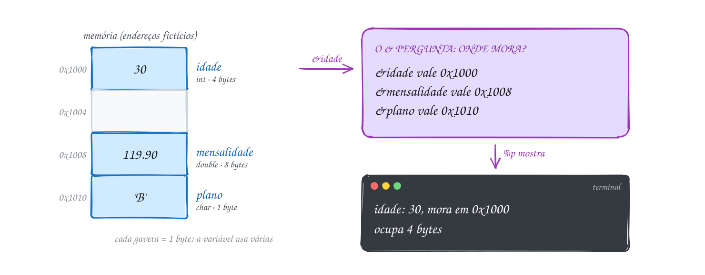
#include <stdio.h>
int main(void) {
int idade = 30;
double mensalidade = 119.90;
char plano = 'B';
// & pergunta "em que gaveta você mora?"; %p mostra a resposta em hexa
printf("idade: %d, mora em %p, ocupa %zu bytes\n",
idade, (void *)&idade, sizeof idade);
printf("mensalidade: %.2f, mora em %p, ocupa %zu bytes\n",
mensalidade, (void *)&mensalidade, sizeof mensalidade);
printf("plano: %c, mora em %p, ocupa %zu byte\n",
plano, (void *)&plano, sizeof plano);
return 0;
}
// Saída (os endereços mudam a cada execução):
// idade: 30, mora em 0x7f0440e00030, ocupa 4 bytes
// mensalidade: 119.90, mora em 0x7f0440e00040, ocupa 8 bytes
// plano: B, mora em 0x7f0440e00020, ocupa 1 byte
Rode duas vezes: valores e tamanhos se repetem, endereços não (o sistema sorteia onde o programa mora). Para cada variável, as mesmas três perguntas: o que tem dentro, onde mora e quanto ocupa:
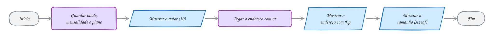
Exemplo A087 · O valor muda, a gaveta não
#include <stdio.h>
int main(void) {
double saldo = 250.00; // saldo da conta, antes dos Pix do dia
printf("saldo = %7.2f, mora em %p\n", saldo, (void *)&saldo);
saldo -= 89.90; // Pix para a conta de luz
printf("saldo = %7.2f, mora em %p\n", saldo, (void *)&saldo);
saldo += 1200.00; // salário caiu
printf("saldo = %7.2f, mora em %p\n", saldo, (void *)&saldo);
// atribuir troca o conteúdo da gaveta; o endereço fica o mesmo até o fim
// do programa
double reserva = saldo; // cópia do valor: outra gaveta, mesmo conteúdo
printf("reserva = %7.2f, mora em %p\n", reserva, (void *)&reserva);
// endereços também se comparam com ==
printf("mesmo valor? %d mesma gaveta? %d\n", reserva == saldo,
&reserva == &saldo);
return 0;
}
// Saída (os endereços mudam a cada execução, mas se repetem dentro dela):
// saldo = 250.00, mora em 0x7f8a1c500020
// saldo = 160.10, mora em 0x7f8a1c500020
// saldo = 1360.10, mora em 0x7f8a1c500020
// reserva = 1360.10, mora em 0x7f8a1c500040
// mesmo valor? 1 mesma gaveta? 0
gcc ~/LPEDC/material/A087.c -o ~/LPEDC/material/A087 && ~/LPEDC/material/A087
Exemplo A088 · As gavetas de um vetor
#include <stdio.h>
int main(void) {
int passos[4] = {8200, 10450, 6300, 12010}; // passos de 4 dias
double km[4] = {5.7, 7.3, 4.4, 8.4}; // os mesmos dias, em km
// num vetor as gavetas ficam coladas: cada uma começa onde a outra acaba
for (int i = 0; i < 4; i++) {
printf("passos[%d] em %p km[%d] em %p\n",
i, (void *)&passos[i], i, (void *)&km[i]);
}
printf("int: %zu bytes por gaveta; double: %zu bytes\n", sizeof passos[0], sizeof km[0]);
printf("o vetor passos inteiro: %zu bytes\n", sizeof passos);
return 0;
}
// Saída (os endereços mudam a cada execução; repare no final de cada um):
// passos[0] em 0x7fe2a0e00020 km[0] em 0x7fe2a0e00040
// passos[1] em 0x7fe2a0e00024 km[1] em 0x7fe2a0e00048
// passos[2] em 0x7fe2a0e00028 km[2] em 0x7fe2a0e00050
// passos[3] em 0x7fe2a0e0002c km[3] em 0x7fe2a0e00058
// int: 4 bytes por gaveta; double: 8 bytes
// o vetor passos inteiro: 16 bytes
gcc ~/LPEDC/material/A088.c -o ~/LPEDC/material/A088 && ~/LPEDC/material/A088
Exercício E259 · ★☆☆
No ônibus da linha 0.420, o painel guarda três dados: a quantidade de passageiros (int, 42), a tarifa (float, 4.40) e a letra do setor (char, 'X'). Declare as três variáveis e mostre, para cada uma, o valor, o endereço e quantos bytes ela ocupa.
Saída esperada (os endereços mudam a cada execução):
passageiros = 42, endereço 0x7f..., tamanho 4
tarifa = 4.40, endereço 0x7f..., tamanho 4
setor = X, endereço 0x7f..., tamanho 1
Exercício E261 · ★★☆
A lanchonete guarda o preço de 2 tamanhos (linhas) de 3 sucos (colunas) numa matriz double precos[2][3]:
{ {6.0, 7.5, 8.0}, {9.0, 11.0, 12.5} }
Mostre o valor e o endereço de cada posição, linha por linha, com dois for aninhados. Depois mostre, com sizeof, quantos bytes ocupa uma posição, uma linha inteira (precos[0]) e a matriz toda. Compare os endereços de precos[0][2] e precos[1][0] na saída: a linha 1 começa logo onde a linha 0 acaba.
Saída esperada (endereços mudam a cada execução):
precos[0][0] = 6.00 em 0x7f...30
precos[0][1] = 7.50 em 0x7f...38
...
precos[1][2] = 12.50 em 0x7f...58
uma posição: 8 bytes
uma linha: 24 bytes
a matriz: 48 bytes
Exercício E262 · ★★☆
Na pizzaria, declare int pedidos = 15 e um ponteiro int *p que guarda o endereço de pedidos. Mostre o valor de pedidos, o endereço de pedidos com %p (com o cast (void *)), o endereço guardado em p e, por fim, "sim" ou "não" conforme os dois endereços sejam iguais. O endereço muda a cada execução.
Saída esperada:
Valor: 15
Endereço: 0x7ffe59064b4c
Pelo ponteiro: 0x7ffe59064b4c
Mesmo endereço: sim
Exercício E263 · ★★★
Variáveis declaradas juntas ficam juntas na memória? Escreva um programa que declare
int a = 1, b = 2, c = 3;
int v[3] = {1, 2, 3};
e mostre o endereço de a, b e c (uma linha cada) e depois, com um for, o endereço de v[0], v[1] e v[2]. No fim, mostre sizeof v e a soma sizeof a + sizeof b + sizeof c. Rode com o rodar. Depois compile SEM o sanitizer e rode de novo, para comparar as duas saídas:
gcc -std=c17 E263.c -o e263 && ./e263
Saída esperada (endereços mudam a cada execução; com o rodar):
a em 0x7f...30
b em 0x7f...40
c em 0x7f...50
v[0] em 0x7f...60
v[1] em 0x7f...64
v[2] em 0x7f...68
sizeof v = 12, a + b + c = 12
O assunto 0044 mostrou que toda variável mora num endereço e que o &
descobre esse número. Falta guardá-lo. Se o endereço é um número, ele pode
ficar numa variável, e com ele na mão você consegue chegar à variável
original de qualquer parte do programa, mesmo sem saber o nome dela.
Pense no entregador do app de comida. Ele não carrega a sua casa no celular; carrega o endereço. Com ele, chega à porta e entrega o pedido. Em C, a variável que faz o papel desse celular é o ponteiro: uma variável que guarda um endereço em vez de um valor comum. O ponteiro também mora numa gaveta e tem endereço próprio, mas o que ele guarda é o número de outra gaveta. Ziviani e a tradução do livro de Kernighan e Ritchie usam o nome apontador; é a mesma coisa (ZIVIANI, 2010).
Na declaração, um * antes do nome indica que a variável é um ponteiro:
int *cartao; lê-se "cartao é um ponteiro para int". O tipo antes do *
diz o que mora no endereço apontado e, com isso, quantos bytes ler lá:
4 para um int, 8 para um double (DEITEL; DEITEL, 2011, cap. 7).
Dois operadores fazem todo o trabalho. O &x, que você já conhece, dá o
endereço de x, e esse endereço vai para o ponteiro: cartao = &pontos;.
O *cartao faz o caminho de volta: vai ao endereço guardado em cartao e
mexe no que está lá. Essa operação se chama desreferenciar o ponteiro
(KERNIGHAN; RITCHIE, 1989, cap. 5). Ler *cartao dá o valor de pontos;
escrever *cartao = 150; muda pontos, sem que o nome pontos apareça na
linha.
int pontos = 120;
int *cartao = &pontos; // cartao guarda o endereço de pontos
*cartao = *cartao + 30; // vai até pontos e soma 30
printf("%d\n", pontos); // 150
O mesmo símbolo * tem três papéis, e só o contexto os separa. Entre dois
valores, como em a * b, é a multiplicação. Numa declaração, como em
int *p, diz que p é um ponteiro. Na frente de um ponteiro já declarado,
como em *p = 5, é a desreferência (BACKES, 2013, cap. 10). Quando a leitura
travar, pergunte em qual dos três casos você está.
Às vezes o ponteiro ainda não tem para onde apontar. Para isso existe o
NULL, um endereço especial que quer dizer "lugar nenhum". Na prática é
o endereço 0, uma região que o sistema proíbe de propósito: desreferenciar
NULL derruba o programa na hora, com o erro segmentation fault, em vez de
estragar algum dado em silêncio. Antes de usar um ponteiro que pode estar
vazio, teste if (cartao != NULL) (DEITEL; DEITEL, 2011, cap. 7).
Um último detalhe ajuda a montar a imagem certa. Todo ponteiro para dado tem
o mesmo tamanho, 8 bytes num computador de 64 bits, porque todos guardam a
mesma coisa: um endereço. O tipo do ponteiro não muda o tamanho dele; muda a
leitura. *cartao busca 4 bytes e os trata como int porque cartao é
um int * (BACKES, 2013, cap. 10).
[!WARNING]
int *p;sem valor guarda lixo, um endereço qualquer, e*p = 10;escreve numa gaveta desconhecida: pode travar na hora ou corromper outra variável e dar problema só depois. Inicialize com um endereço ouNULL. E emint *a, b;sóaé ponteiro; para dois,int *a, *b;.
No caixa da farmácia, o cliente tem 120 pontos. O ponteiro cartao começa em
NULL, recebe &pontos, e a compra soma 30 por meio do ponteiro:
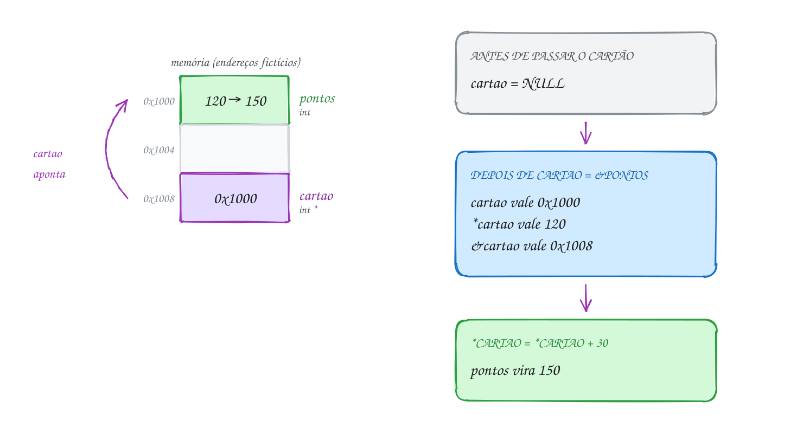
#include <stdio.h>
int main(void) {
int pontos = 120; // pontos do cartão fidelidade
int *cartao = NULL; // ponteiro para int; NULL: ainda não aponta para nada
cartao = &pontos; // o cliente passou o cartão: cartao guarda &pontos
printf("&pontos = %p\n", (void *)&pontos);
printf("cartao = %p\n", (void *)cartao); // o mesmo endereço
printf("*cartao = %d\n", *cartao); // o que tem na gaveta apontada
if (cartao != NULL) {
*cartao = *cartao + 30; // compra de R$ 30: muda pontos ATRAVÉS do ponteiro
} else {
printf("Compra sem cartão\n");
}
printf("pontos = %d\n", pontos);
printf("&cartao = %p\n", (void *)&cartao); // o ponteiro também mora numa gaveta
return 0;
}
// Saída (os endereços mudam a cada execução):
// &pontos = 0x7f631f200030
// cartao = 0x7f631f200030
// *cartao = 120
// pontos = 150
// &cartao = 0x7f631f200040
cartao é o endereço guardado, *cartao o valor lá dentro e &cartao onde o
próprio ponteiro mora. Antes de desreferenciar, o teste contra NULL:
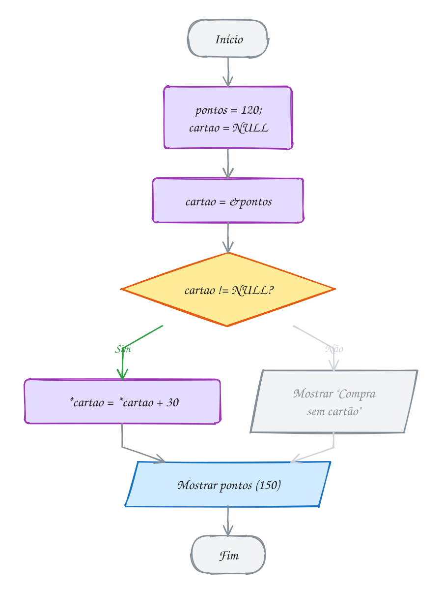
Exemplo A089 · Duas cancelas, um contador
#include <stdio.h>
int main(void) {
int vagas = 40; // vagas livres no estacionamento do shopping
// dois ponteiros podem apontar para a MESMA variável
int *entrada = &vagas, *saida = &vagas; // o * vai em cada nome
int *cancela_vip = NULL; // ainda não foi instalada
*entrada -= 1; // entrou um carro
*entrada -= 1; // entrou outro
*saida += 1; // saiu um
printf("vagas = %d\n", vagas);
// comparar ponteiros pergunta "apontam para a mesma gaveta?"
printf("entrada == saida? %d\n", entrada == saida);
printf("*entrada = %d, *saida = %d\n", *entrada, *saida);
// antes de usar *cancela_vip, confira: *NULL derruba o programa
if (cancela_vip != NULL) {
*cancela_vip -= 1;
} else {
printf("cancela VIP desligada: nada a fazer\n");
}
int vagas_moto = 12;
saida = &vagas_moto; // saida agora aponta para outra gaveta
*saida += 1;
printf("entrada == saida? %d\n", entrada == saida);
printf("vagas = %d, vagas_moto = %d\n", vagas, vagas_moto);
return 0;
}
// Saída:
// vagas = 39
// entrada == saida? 1
// *entrada = 39, *saida = 39
// cancela VIP desligada: nada a fazer
// entrada == saida? 0
// vagas = 39, vagas_moto = 13
gcc ~/LPEDC/material/A089.c -o ~/LPEDC/material/A089 && ~/LPEDC/material/A089
Exemplo A090 · Gasolina ou etanol?
#include <stdio.h>
int main(void) {
float gasolina = 5.89f, etanol = 4.29f;
float *escolha = &gasolina; // começa apontando para a gasolina
// regra dos 70%: se o etanol custa até 70% da gasolina, compensa
if (etanol / gasolina <= 0.7f) {
escolha = &etanol; // o ponteiro muda de alvo; as variáveis, não
}
printf("Escolhido: R$ %.2f o litro\n", *escolha);
printf("Com R$ 100 dá %.1f litros\n", 100.0f / *escolha);
etanol = 3.99f; // baixou: 3.99 / 5.89 = 0.68, agora compensa
if (etanol / gasolina <= 0.7f) {
escolha = &etanol;
}
printf("Escolhido: R$ %.2f o litro\n", *escolha);
// o ponteiro tem o tamanho de um endereço; *escolha, o tamanho de um float
printf("sizeof escolha = %zu, sizeof *escolha = %zu\n", sizeof escolha, sizeof *escolha);
return 0;
}
// Saída:
// Escolhido: R$ 5.89 o litro
// Com R$ 100 dá 17.0 litros
// Escolhido: R$ 3.99 o litro
// sizeof escolha = 8, sizeof *escolha = 4
gcc ~/LPEDC/material/A090.c -o ~/LPEDC/material/A090 && ~/LPEDC/material/A090
Exercício E265 · ★☆☆
O ar-condicionado da sala marca 22.5 graus. Declare double temperatura = 22.5 e um ponteiro pt que aponte para ela. Usando SÓ o ponteiro (sem escrever temperatura do lado esquerdo do =), mostre a temperatura, aumente 1.5 grau e mostre de novo. No fim, mostre a variável temperatura pelo nome para provar que ela mudou.
Saída esperada:
Pelo ponteiro: 22.5
Pelo ponteiro: 24.0
Pela variável: 24.0
Exercício E267 · ★★☆
Na academia, declare int peso = 0 e int meta = 78, e dois ponteiros, um para cada variável (peso_ptr e meta_ptr). Mude o peso para 82 escrevendo pelo ponteiro peso_ptr. Depois mostre peso e, lendo pelo ponteiro meta_ptr, a meta.
Saída esperada:
Peso: 82
Meta: 78
Exercício E268 · ★★☆
No check-in do aeroporto, a companhia aceita uma mala de até 23 kg sem cobrar. Você tem duas malas: mala_azul com 19 kg e mala_preta com 26 kg. Complete o programa: faça o ponteiro pesada apontar para a mala mais pesada e, usando só o ponteiro, tire 4 kg dela (você passou umas roupas para a mochila). Depois mostre as duas malas.
Saída esperada:
Mais pesada: 26 kg
Depois de tirar 4 kg: azul 19 kg, preta 22 kg
Exercício E269 · ★★★
Transforme o trecho abaixo num teste de mesa que o próprio programa imprime. Cole o código no main e, depois da declaração e depois de CADA uma das cinco linhas, acrescente um printf que mostre a linha executada e os valores de a, b, *p e *q naquele momento.
int a = 3, b = 8;
int *p = &a, *q = &b;
*p = *q + 1;
p = q;
*p = *p * 2;
q = &a;
*q -= 4;
Saída esperada:
início a = 3, b = 8, *p = 3, *q = 8
*p = *q + 1 a = 9, b = 8, *p = 9, *q = 8
p = q a = 9, b = 8, *p = 8, *q = 8
...
*q -= 4 a = 5, b = 16, *p = 16, *q = 5
No mercadinho, as etiquetas saíram trocadas: o arroz ficou a R$ 8 e o feijão
a R$ 25. Você quer uma função troca que conserte isso, recebendo os dois
preços e trocando um pelo outro. A versão óbvia, que recebe dois int e
troca, compila e roda, mas os preços do main continuam errados. O motivo
está no jeito como o C chama funções.
No C, todo argumento é passado por valor (assunto 0029): a função recebe
uma cópia do que você mandou (DEITEL; DEITEL, 2011, cap. 7). Uma chamada
troca_copias(arroz, feijao) cria duas variáveis novas, a e b, com 8 e
25. A função troca essas cópias e termina, e as cópias somem junto com o
frame dela (assunto 0031). O arroz do main nem fica sabendo.
A imagem é a de uma reforma. Se você entrega ao pintor uma foto da sua sala,
ele pinta a foto e a parede continua igual. Se entrega o endereço da casa, ele
vai até lá e pinta a parede de verdade. Em C, a saída é entregar o
endereço em vez do valor. O endereço também chega como cópia, mas a
cópia aponta para a mesma gaveta, e *a dentro da função é a própria
variável de quem chamou. Esse arranjo se chama passagem por referência; o
C não tem esse mecanismo pronto e o simula com ponteiros (KERNIGHAN; RITCHIE,
1989, cap. 5).
Na prática, a mudança aparece nos dois lados. A função declara ponteiros nos
parâmetros, void troca(int *a, int *b), e quem chama passa endereços,
troca(&arroz, &feijao) (BACKES, 2013, cap. 10). Dentro da função, cada
leitura e escrita no dado de fora passa pelo *: guarde *a numa auxiliar,
copie *b para *a e a auxiliar para *b.
Isso explica o & que você escreve no scanf desde o começo do curso.
scanf("%d", &total) precisa escrever na variável, então pede o
endereço dela. Sem o &, ele receberia uma cópia do lixo guardado em
total e escreveria num endereço inventado. Já scanf("%s", nome) vai sem
& porque o nome de um vetor já é o endereço do primeiro elemento (BACKES,
2013, cap. 10); o assunto 0047 detalha essa conversão.
O mesmo recurso resolve outro limite. O return devolve um valor só.
Quando a função precisa entregar dois ou mais resultados, ela recebe
ponteiros e escreve neles: cada ponteiro é uma caixa de saída que quem chamou
preparou. O A092 racha a conta de um restaurante assim, devolvendo o valor de
cada pessoa e a sobra (DEITEL; DEITEL, 2011, cap. 7).
Passar um endereço custa 8 bytes, seja qual for o tamanho do dado apontado.
Por isso, no módulo 08, uma struct grande vai para a função por ponteiro,
mesmo quando a função só precisa lê-la. Nesse caso, marque o parâmetro como
const int *p: a função pode ler *p, e o compilador recusa qualquer
*p = ... lá dentro (DEITEL; DEITEL, 2011, cap. 7).
[!WARNING] Esquecer o
&na chamada,troca(arroz, feijao), manda o número 8 onde se espera um endereço; o compilador avisa e, se rodar, o programa cai. Esquecer o*na função (a = b;) troca só os ponteiros locais, que são cópias. Quem mexe no dado de quem chamou é sempre*a.
No mercadinho, as etiquetas saíram trocadas: arroz a R$ 8, feijão a R$ 25. A
troca recebe 0x1000 e 0x1004, guarda o 8 em tmp e mexe direto nas
gavetas do main:
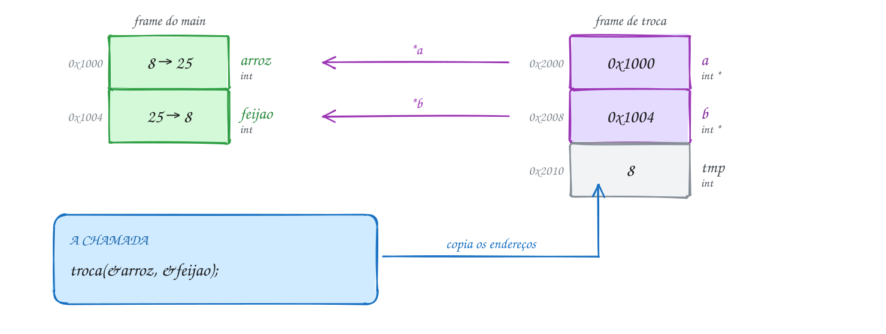
#include <stdio.h>
// recebe CÓPIAS: troca as cópias e o main nem fica sabendo
void troca_copias(int a, int b) {
int tmp = a;
a = b;
b = tmp;
}
// recebe ENDEREÇOS: troca o que está nas gavetas do main
void troca(int *a, int *b) {
int tmp = *a; // guarda o valor da primeira gaveta
*a = *b; // primeira gaveta recebe o da segunda
*b = tmp; // segunda gaveta recebe o guardado
}
int main(void) {
int arroz = 8, feijao = 25; // digitados trocados: o arroz é o mais caro
troca_copias(arroz, feijao);
printf("Depois de troca_copias: arroz %d, feijão %d\n", arroz, feijao);
if (arroz < feijao) { // o pacote de arroz deveria custar mais
troca(&arroz, &feijao); // passa os endereços, não os valores
}
printf("Depois de troca: arroz %d, feijão %d\n", arroz, feijao);
return 0;
}
// Saída:
// Depois de troca_copias: arroz 8, feijão 25
// Depois de troca: arroz 25, feijão 8
O main só chama a troca se os preços estão fora de ordem; a troca são três
passos, com a variável auxiliar:
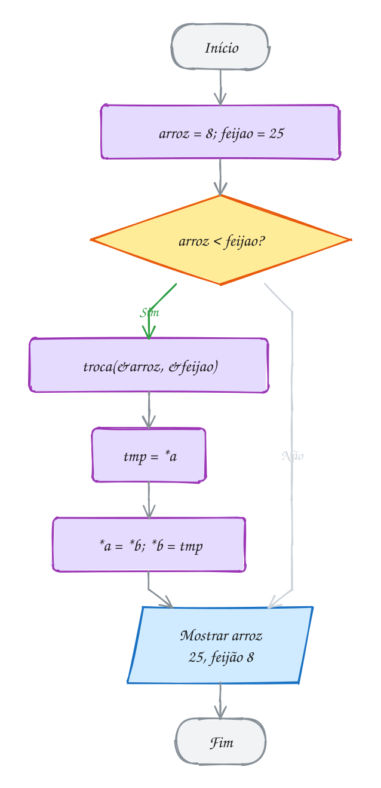
Teste de mesa de troca(&arroz, &feijao), com os endereços do desenho:
| linha | a |
b |
tmp |
arroz (0x1000) |
feijao (0x1004) |
|---|---|---|---|---|---|
| entrada na função | 0x1000 | 0x1004 | ? | 8 | 25 |
tmp = *a |
0x1000 | 0x1004 | 8 | 8 | 25 |
*a = *b |
0x1000 | 0x1004 | 8 | 25 | 25 |
*b = tmp |
0x1000 | 0x1004 | 8 | 25 | 8 |
a e b nunca mudam: muda o que está nas gavetas para onde apontam.
Exemplo A091 · O plantão que vira o relógio
#include <stdio.h>
// parâmetro de ida E volta: lê os valores do main e escreve de volta
void normaliza(int *horas, int *minutos) {
*horas += *minutos / 60; // cada 60 minutos viram uma hora
*minutos %= 60;
*horas %= 24; // passou da meia-noite, recomeça do 0
}
// horas e minutos já SÃO endereços: repassa para normaliza sem &
void soma_minutos(int *horas, int *minutos, int extra) {
*minutos += extra;
normaliza(horas, minutos);
}
int main(void) {
int h = 22, m = 40; // começo do plantão no hospital
soma_minutos(&h, &m, 95); // o primeiro atendimento durou 95 minutos
printf("Fim do 1º atendimento: %02d:%02d\n", h, m);
soma_minutos(&h, &m, 50);
printf("Fim do 2º atendimento: %02d:%02d\n", h, m);
// normaliza sozinha também arruma um horário anotado errado
int h2 = 9, m2 = 135; // alguém anotou 9h135
normaliza(&h2, &m2);
printf("9h135 arrumado: %02d:%02d\n", h2, m2);
return 0;
}
// Saída:
// Fim do 1º atendimento: 00:15
// Fim do 2º atendimento: 01:05
// 9h135 arrumado: 11:15
gcc ~/LPEDC/material/A091.c -o ~/LPEDC/material/A091 && ~/LPEDC/material/A091
Exemplo A092 · Rachando a conta do bar
#include <stdio.h>
// "devolve" dois resultados: escreve nas variáveis de quem chamou
void racha(int total, int pessoas, int *cada, int *sobra) {
*cada = total / pessoas;
*sobra = total % pessoas;
}
int main(void) {
int total, pessoas;
int cada, sobra; // a função vai preencher
printf("Total da conta (R$): ");
if (scanf("%d", &total) != 1) { // & : o scanf precisa saber ONDE guardar
return 1;
}
printf("Quantas pessoas: ");
if (scanf("%d", &pessoas) != 1 || pessoas <= 0) {
return 1;
}
racha(total, pessoas, &cada, &sobra);
printf("Cada um paga R$ %d e sobram R$ %d para a gorjeta\n", cada, sobra);
return 0;
}
// Exemplo de execução:
// Total da conta (R$): 187
// Quantas pessoas: 4
// Cada um paga R$ 46 e sobram R$ 3 para a gorjeta
gcc ~/LPEDC/material/A092.c -o ~/LPEDC/material/A092 && ~/LPEDC/material/A092
Exercício E271 · ★☆☆
Promoção do cinema: quem compra pelo app ganha o dobro de ingressos. Escreva a função void dobra(int *quantidade), que dobra o valor da variável de quem chamou. No main, comece com ingressos = 3, chame a função e mostre o resultado.
Saída esperada:
Antes: 3 ingressos
Depois: 6 ingressos
Exercício E273 · ★★☆
As temperaturas máximas da semana em Cuiabá foram
{ 34, 37, 31, 39, 36, 33, 38 }
Escreva void extremos(const int v[], int n, int *menor, int *maior), que acha a menor e a maior temperatura do vetor numa passada só e entrega as duas pelos ponteiros. Mostre também a amplitude (maior - menor).
Saída esperada:
Menor: 31 Maior: 39 Amplitude: 8
Exercício E274 · ★★☆
A catraca do metrô conta passageiros. Escreva duas funções:
void passa(int *contador) // soma 1 ao valor apontado
void zera(int *valor) // coloca 0 no valor apontado
No main, comece com passageiros = 0 e avulsos = 5, chame passa três vezes para passageiros, chame zera para avulsos e mostre os dois.
Saída esperada:
Passageiros: 3
Bilhetes avulsos: 0
Exercício E275 · ★★★
Escreva
int raizes(double a, double b, double c, double *x1, double *x2)
que resolve axx + b*x + c = 0. A função DEVOLVE quantas raízes reais existem (0, 1 ou 2) e escreve as raízes em *x1 e *x2 (quando houver uma só, as duas recebem o mesmo valor). Se a for 0, devolve -1 (não é do 2º grau). No main, teste as quatro equações abaixo e mostre o resultado com duas casas decimais.
Saída esperada:
x² - 5x + 6 = 0 -> 2 raízes: 3.00 e 2.00
x² + 2x + 1 = 0 -> 1 raiz: -1.00
x² + 1 = 0 -> nenhuma raiz real
0x² + 3x + 1 = 0 -> não é do 2º grau
gcc ~/LPEDC/material/E275.c -o ~/LPEDC/material/E275 -lm && ~/LPEDC/material/E275
Numa rua de loteamento, os números das casas sobem de 4 em 4: 1000, 1004,
1008. "Três casas depois da 1000" é a 1012, não a 1003. Num vetor de int
acontece o mesmo: as gavetas ficam coladas e cada item ocupa 4 bytes. Os
ponteiros sabem disso e fazem a conta por você, e é essa conta que liga
ponteiros e vetores.
Comece pelo nome do vetor. Numa expressão, ele quase sempre vira o
endereço do primeiro elemento: kwh vale &kwh[0]. Essa conversão se chama
decaimento; diz-se que o vetor decai para ponteiro (KERNIGHAN; RITCHIE,
1989, cap. 5). É por isso que você passa um vetor a uma função sem & e a
função altera o original (assunto 0038): ela recebe esse endereço.
Com um ponteiro dentro de um vetor, vale a aritmética de ponteiros. A
regra principal: p + 1 é o endereço do próximo elemento, e não do
próximo byte. O C multiplica o 1 pelo tamanho do tipo apontado, 4 bytes num
int * e 8 num double *. Daí saem as outras operações. p++ avança um
elemento e p-- volta um. Se p e q apontam para o mesmo vetor, q - p
dá quantos elementos há entre eles, e p < q diz qual vem antes (DEITEL;
DEITEL, 2011, cap. 7). Comparar ponteiros de vetores diferentes não tem
sentido.
Juntando as peças, chega-se à regra central: v[i] é exatamente
*(v + i). Ande i elementos a partir do começo e pegue o que tem lá. Os
colchetes são só um jeito mais curto de escrever essa conta, e por isso valem
para ponteiro também: p[2] é *(p + 2), contado de onde p aponta
agora, e não do começo do vetor (DEITEL; DEITEL, 2011, cap. 7).
int kwh[5] = {210, 185, 190, 240, 175};
int *p = &kwh[1]; // p aponta para o 185
printf("%d %d\n", p[0], p[2]); // 185 240
printf("%td\n", p - kwh); // 1 (elementos, não bytes)
Mesmo com tanta semelhança, vetor não é ponteiro. sizeof kwh dá o
tamanho do vetor inteiro (20 bytes), enquanto sizeof p dá 8, o tamanho de
um endereço. E o nome do vetor é um endereço fixo: kwh = outro; e kwh++
não compilam, enquanto p++ é permitido (BACKES, 2013, cap. 10).
Na matriz (assunto 0039), a regra vale em dois níveis: m[i][j] é
*(*(m + i) + j). O ponto que a prova adora é o tamanho do passo. Em
int m[3][4], cada elemento de m é uma linha inteira, então m + 1 anda
16 bytes (4 int). Já m[0] é a primeira linha, que decai para um
int *, e m[0] + 1 anda só 4 bytes (BACKES, 2013, cap. 10).
Ao percorrer um vetor com ponteiro, o laço costuma parar em kwh + 5, o
endereço um depois do último. O C garante que esse endereço pode ser
calculado e comparado, mas nunca lido: não há elemento ali (KERNIGHAN;
RITCHIE, 1989, cap. 5). Os laços com p++ e com i++ têm o mesmo
desempenho; prefira o índice, que quase sempre fica mais claro.
[!WARNING]
*p + 1soma 1 ao valor;*(p + 1)anda uma gaveta e pega o valor dela, porque o*vem antes do+.*p++lê o valor e depois avança o ponteiro;(*p)++soma 1 no valor. E passar do fim (p <= kwh + 5) dástack-buffer-overflowno AddressSanitizer.
O consumo de luz de 5 meses está em kwh. O ponteiro p começa em 0x1000
e anda uma gaveta por vez, somando, até chegar a kwh + 5:
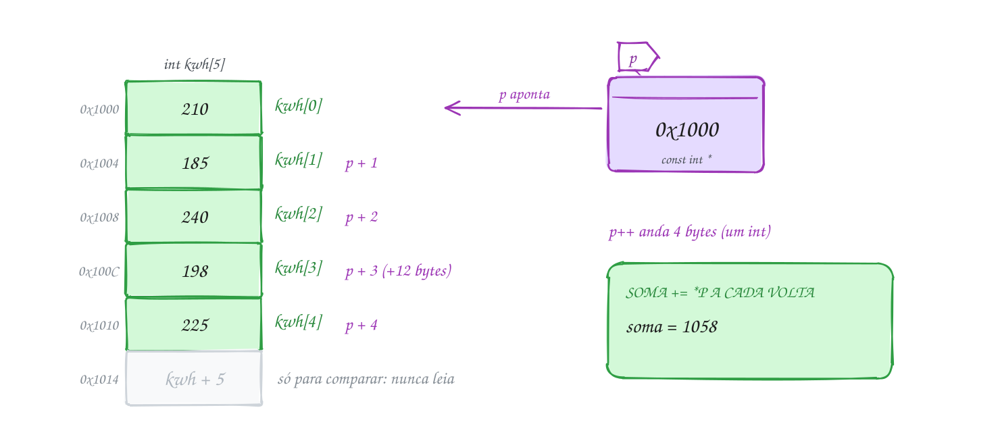
#include <stdio.h>
int main(void) {
int kwh[5] = {210, 185, 240, 198, 225}; // consumo de 5 meses
int soma = 0;
// kwh sozinho vira &kwh[0]; kwh + 5 é "um depois do último"
for (const int *p = kwh; p < kwh + 5; p++) {
printf("p = %p *p = %d\n", (void *)p, *p);
soma += *p;
}
printf("Total: %d kWh Média: %.1f kWh\n", soma, soma / 5.0);
// as duas notações são a mesma conta
printf("kwh[3] = %d *(kwh + 3) = %d\n", kwh[3], *(kwh + 3));
return 0;
}
// Saída (os endereços mudam a cada execução; repare que sobem de 4 em 4):
// p = 0x7fa4cb400020 *p = 210
// p = 0x7fa4cb400024 *p = 185
// p = 0x7fa4cb400028 *p = 240
// p = 0x7fa4cb40002c *p = 198
// p = 0x7fa4cb400030 *p = 225
// Total: 1058 kWh Média: 211.6 kWh
// kwh[3] = 198 *(kwh + 3) = 198
O const int *p só lê pelo ponteiro, mas pode andar. É o acumulador do
assunto 0025, com o ponteiro no lugar do índice:
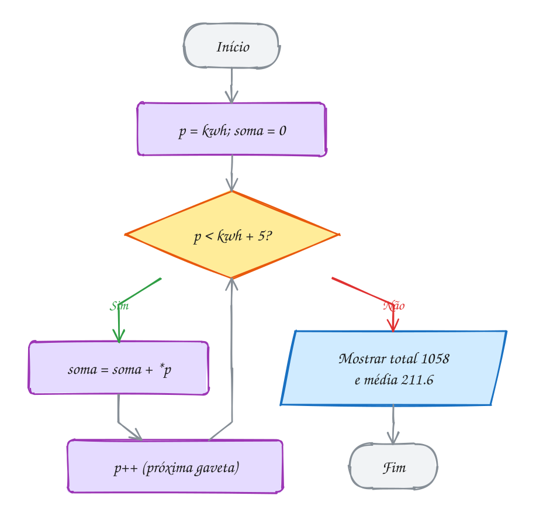
Com os endereços fictícios do desenho (kwh em 0x1000):
| volta | p |
*p |
soma depois |
p < kwh + 5? |
|---|---|---|---|---|
| 1 | 0x1000 | 210 | 210 | sim |
| 2 | 0x1004 | 185 | 395 | sim |
| 3 | 0x1008 | 240 | 635 | sim |
| 4 | 0x100C | 198 | 833 | sim |
| 5 | 0x1010 | 225 | 1058 | sim |
| fim | 0x1014 | (não lê) | 1058 | não: para |
Exemplo A093 · De trás para frente, um passo por tipo
#include <stdio.h>
int main(void) {
double temp[5] = {18.5, 21.0, 24.5, 23.0, 19.5}; // de segunda a sexta
char turno[3] = {'M', 'T', 'N'}; // manhã, tarde, noite
// andar para trás: comece em temp + 5 (um depois do último) e recue
// ANTES de usar. Parar em p >= temp obrigaria p a ir para temp - 1,
// um endereço que o C não garante que exista
printf("De sexta para segunda:");
for (const double *p = temp + 5; p > temp;) {
p--;
printf(" %.1f", *p);
}
printf("\n");
// p + 1 anda UM elemento: para double são 8 bytes, para char, 1
printf("temp em %p, temp + 1 em %p\n", (void *)temp, (void *)(temp + 1));
printf("turno em %p, turno + 1 em %p\n", (void *)turno, (void *)(turno + 1));
// a distância entre ponteiros também é contada em elementos
const double *quarta = &temp[2];
printf("de segunda até quarta: %td elementos\n", quarta - temp);
printf("turno[2] = %c, *(turno + 2) = %c\n", turno[2], *(turno + 2));
return 0;
}
// Saída (os endereços mudam a cada execução; repare no último dígito):
// De sexta para segunda: 19.5 23.0 24.5 21.0 18.5
// temp em 0x7ff177100030, temp + 1 em 0x7ff177100038
// turno em 0x7ff177100080, turno + 1 em 0x7ff177100081
// de segunda até quarta: 2 elementos
// turno[2] = N, *(turno + 2) = N
gcc ~/LPEDC/material/A093.c -o ~/LPEDC/material/A093 && ~/LPEDC/material/A093
Exemplo A094 · O primeiro dia da meta
#include <stdio.h>
// devolve o endereço do primeiro elemento >= meta, ou NULL se não houver
const int *primeiro_acima(const int *v, int n, int meta) {
for (const int *p = v; p < v + n; p++) {
if (*p >= meta) {
return p;
}
}
return NULL;
}
int main(void) {
int passos[7] = {6200, 8100, 10400, 7300, 12000, 9800, 11050};
const int *achou = primeiro_acima(passos, 7, 10000);
if (achou != NULL) {
// ponteiro menos ponteiro = distância em ELEMENTOS, não em bytes;
// o resultado é um ptrdiff_t, e o formato dele é %td
printf("Meta batida no dia %td com %d passos\n", achou - passos + 1, *achou);
if (achou > passos && achou < passos + 6) { // tem véspera e dia seguinte?
printf("Véspera: %d Dia seguinte: %d\n", achou[-1], achou[1]); // relativo a achou
}
}
int *p = passos;
// vetor não é ponteiro: sizeof mostra a diferença
printf("sizeof passos = %zu sizeof p = %zu\n", sizeof passos, sizeof p);
return 0;
}
// Saída:
// Meta batida no dia 3 com 10400 passos
// Véspera: 8100 Dia seguinte: 7300
// sizeof passos = 28 sizeof p = 8
gcc ~/LPEDC/material/A094.c -o ~/LPEDC/material/A094 && ~/LPEDC/material/A094
Exercício E277 · ★☆☆
As notas de uma aluna no bimestre estão em
float notas[4] = {7.5, 8.0, 6.5, 9.0};
Mostre as quatro notas e a média SEM usar colchetes depois da declaração: só um ponteiro que anda pelo vetor.
Saída esperada:
7.5 8.0 6.5 9.0
Média: 7.75
Exercício E279 · ★★☆
Você quer ouvir a playlist de trás para frente. As faixas estão numeradas num vetor:
int faixas[7] = {11, 23, 35, 47, 52, 68, 74};
Escreva void inverte(int *v, int n), que inverte o vetor no lugar usando DOIS ponteiros: ini (no começo) e fim (no último). Troque o que eles apontam, aproxime um do outro e pare quando se cruzarem. Use a função troca do assunto 0046.
Saída esperada:
74 68 52 47 35 23 11
Exercício E280 · ★★☆
Na sorveteria, o estoque de 5 sabores está no vetor int estoque[5] = {12, 8, 15, 4, 9}. Crie um ponteiro p que aponta para o início do vetor e avance-o uma posição (p += 1). Usando p com índice (p[2]), mude o estoque do sabor de índice 3 para 20. Depois mostre os 5 valores percorrendo o vetor com um ponteiro q, de estoque até estoque + 5, separados por espaço.
Saída esperada:
12 8 15 20 9
Exercício E281 · ★★★
A loja tem 3 filiais e anotou as vendas de 4 semanas numa matriz
int vendas[3][4] = {
{12, 15, 9, 20},
{7, 11, 14, 10},
{18, 6, 13, 16},
};
Como a matriz é uma fila só de 12 ints na memória (assunto 0039), dá para percorrê-la com UM ponteiro e UM laço. Faça isso: some tudo e descubra qual filial vendeu mais, calculando a linha de cada elemento pela distância (p - inicio) / 4.
Saída esperada:
Total: 151
Filial 0: 56
Filial 1: 42
Filial 2: 53
Campeã: filial 0
Na recepção do evento, o nome do crachá é digitado numa ficha sua: dá para corrigir uma letra ou passar tudo para maiúsculas. O apelido só aparece num cartaz pregado na parede: você lê, mas não escreve nele. Em C, essas duas situações se escrevem quase igual e se comportam de jeitos bem diferentes. A diferença está em quem é dono dos bytes do texto.
Junte duas coisas que você já sabe. Uma string é um vetor de char
terminado em '\0' (assunto 0041), e o nome de um vetor vira o endereço do
primeiro elemento (assunto 0047). Por isso toda função de string, de
strlen a printf com %s, recebe um char *: o endereço do primeiro
caractere. Com ele, a função anda gaveta por gaveta até achar o '\0'
(KERNIGHAN; RITCHIE, 1989, cap. 5).
Agora o texto entre aspas. Quando você escreve "bia" no código, cria um
literal de string. O compilador guarda cada literal uma vez só, numa
região de somente leitura da memória do programa, junto com o código
(DEITEL; DEITEL, 2011, cap. 7). Essa região se chama .rodata (read-only
data), e o sistema barra qualquer tentativa de escrever nela. Literais
iguais podem até dividir o mesmo endereço.
Com isso, as duas declarações do crachá ficam claras. char nome[] = "ana";
cria um vetor de 4 char na pilha e copia o literal para dentro
dele. O vetor é seu, como a ficha: nome[0] = 'A' vale (DEITEL; DEITEL,
2011, cap. 7). Já const char *apelido = "bia"; cria só um ponteiro, de 8
bytes, com o endereço do literal, sem cópia nenhuma. Ele é a seta para o
cartaz. Escrever pelo ponteiro, como apelido[0] = 'B', seria escrever na
região de somente leitura; o const faz o compilador recusar essa linha
antes de o programa rodar (DEITEL; DEITEL, 2011, cap. 7).
char nome[] = "ana"; // vetor seu, cópia do literal
const char *apelido = "bia"; // seta para o literal
nome[0] = 'A'; // vale: nome vira "Ana"
apelido = "bibi"; // vale: a seta aponta para outro literal
printf("%zu %zu\n", sizeof nome, sizeof apelido); // 4 8
O código mostra a outra metade da diferença. O ponteiro pode mudar de alvo:
apelido = "bibi"; só troca o endereço guardado. O vetor não pode:
nome = "joana"; não compila, porque o nome do vetor é um endereço fixo; para
trocar o conteúdo, use strcpy. E o sizeof mede coisas diferentes:
sizeof nome dá 4, os bytes do vetor, enquanto sizeof apelido dá 8, o
tamanho de um endereço (BACKES, 2013, cap. 10).
A mesma escolha aparece numa lista de textos fixos, como os dias da semana.
Um vetor de ponteiros, const char *dias[], gasta 8 bytes por nome mais os
bytes de cada literal. Uma matriz char dias[4][10] reserva 10 bytes por
linha, mesmo para um nome curto como "sexta" (DEITEL; DEITEL, 2011, cap. 7).
O vetor de ponteiros economiza quando os textos têm tamanhos diferentes e
não precisam mudar.
[!WARNING]
char *s = "ola"; s[0] = 'O';compila sem aviso e cai na execução (segmentation fault), porque o literal é só de leitura. Useconst char *para apontar para literal, ouchar s[]quando precisar mudar o texto. E==entre strings compara endereços: usestrcmp.
No crachá, nome é uma cópia na pilha e o laço passa cada letra para
maiúscula; apelido é só uma seta para o literal "bia", na área de leitura:
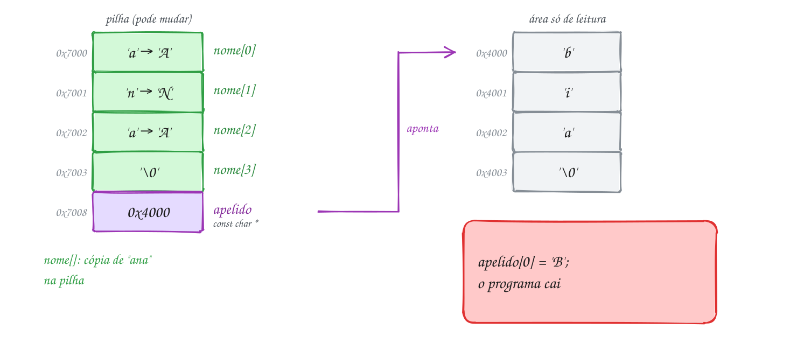
#include <stdio.h>
#include <ctype.h>
int main(void) {
char nome[] = "ana"; // vetor de 4 chars, CÓPIA do literal: pode mudar
const char *apelido = "bia"; // ponteiro para o literal: só leitura
// passa o nome para maiúsculas andando com um ponteiro até o '\0'
for (char *p = nome; *p != '\0'; p++) {
*p = (char)toupper((unsigned char)*p);
}
printf("Crachá: %s (%s)\n", nome, apelido);
printf("sizeof nome = %zu, sizeof apelido = %zu\n", sizeof nome, sizeof apelido);
apelido = "bibi"; // vale: o ponteiro passa a apontar para outro literal
// nome = "joana"; // não compila: vetor não pode receber outro endereço
printf("Novo apelido: %s\n", apelido);
return 0;
}
// Saída:
// Crachá: ANA (bia)
// sizeof nome = 4, sizeof apelido = 8
// Novo apelido: bibi
É o laço clássico de string: em vez de contar posições, pergunta "a gaveta
atual é o '\0'?":
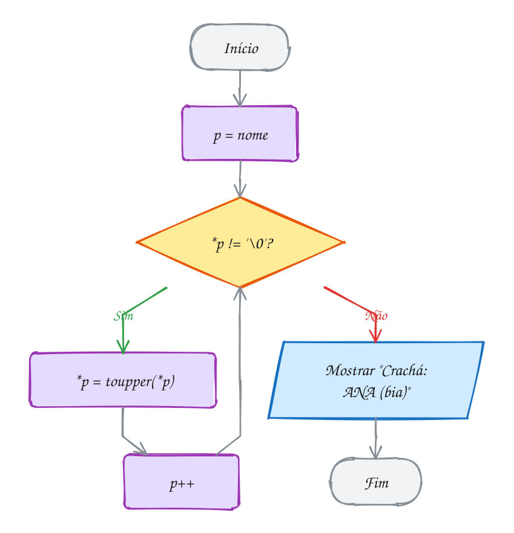
Exemplo A095 · A string começa onde o ponteiro aponta
#include <stdio.h>
int main(void) {
char endereco[] = "Rua das Flores, 120 - Centro"; // vetor: dá para mudar
// procura a vírgula andando com um ponteiro
char *virgula = endereco;
while (*virgula != '\0' && *virgula != ',') {
virgula++;
}
// para o printf, a string vai do endereço recebido até o primeiro '\0'
printf("Inteiro: %s\n", endereco);
printf("Da vírgula: %s\n", virgula);
printf("Depois dela: %s\n", virgula + 2); // pula a vírgula e o espaço
// um '\0' no meio corta a string: o resto continua na memória
if (*virgula == ',') {
*virgula = '\0';
}
printf("Só a rua: %s\n", endereco);
printf("O resto: %s\n", virgula + 2); // a parte de trás segue lá
// com const char * apontando para um literal, isso não seria permitido:
// const char *fixo = "Rua A, 10"; fixo[5] = '\0'; não compila
return 0;
}
// Saída:
// Inteiro: Rua das Flores, 120 - Centro
// Da vírgula: , 120 - Centro
// Depois dela: 120 - Centro
// Só a rua: Rua das Flores
// O resto: 120 - Centro
gcc ~/LPEDC/material/A095.c -o ~/LPEDC/material/A095 && ~/LPEDC/material/A095
Exemplo A096 · Os dias da feira
#include <stdio.h>
// conta os caracteres andando até o '\0': o mesmo que strlen faz
size_t comprimento(const char *s) {
const char *p = s;
while (*p != '\0') {
p++;
}
return (size_t)(p - s); // distância entre o fim e o começo
}
int main(void) {
// vetor de ponteiros: cada posição guarda o endereço de um literal
const char *dias[] = {"segunda", "quarta", "sexta", "domingo"};
// matriz: cada linha reserva espaço para o maior nome
char tabela[4][10] = {"segunda", "quarta", "sexta", "domingo"};
for (int i = 0; i < 4; i++) {
printf("%-8s %zu letras\n", dias[i], comprimento(dias[i]));
}
printf("vetor de ponteiros: %zu bytes (só os endereços)\n", sizeof dias);
printf("matriz de chars: %zu bytes (4 linhas de 10)\n", sizeof tabela);
printf("dias[2][0] = %c, tabela[2][0] = %c\n", dias[2][0], tabela[2][0]);
return 0;
}
// Saída:
// segunda 7 letras
// quarta 6 letras
// sexta 5 letras
// domingo 7 letras
// vetor de ponteiros: 32 bytes (só os endereços)
// matriz de chars: 40 bytes (4 linhas de 10)
// dias[2][0] = s, tabela[2][0] = s
gcc ~/LPEDC/material/A096.c -o ~/LPEDC/material/A096 && ~/LPEDC/material/A096
Exercício E283 · ★☆☆
Escreva int conta_vogais(const char *s), que conta as vogais (minúsculas a, e, i, o, u) de uma frase andando com um ponteiro até o '\0', sem usar índice nem strlen. Teste com a frase do outdoor:
"promocao de pastel na feira de domingo"
Saída esperada:
Vogais: 15
Exercício E285 · ★★☆
Escreva sua própria versão do strcpy com ponteiros:
void copia(char *destino, const char *origem)
Copie caractere por caractere, INCLUINDO o '\0' do fim. Depois escreva uma segunda versão, copia_classica, com o laço clássico de corpo vazio:
while ((*destino++ = *origem++) != '\0') {
}
Teste as duas copiando "Porto Alegre" para um vetor char destino[20] e mostrando o resultado e o strlen dele. Para provar que a clássica copia o '\0', antes de chamá-la encha destino com "XXXXXXXXXXXXXXXXXXX" (19 X) e confira que nenhum X sobra no fim.
Saída esperada:
copia: Porto Alegre (12 letras)
copia_classica: Porto Alegre (12 letras)
Exercício E286 · ★★☆
Na portaria do condomínio, escreva um programa que:
- cria a saudação "ola, visitante!" de forma que seja possível trocar o
primeiro caractere por 'O', e mostra o resultado;
- copia "B" com strcpy para um vetor bloco de 2 posições e mostra "Bloco: B";
- compara o vetor morador, que guarda "ana", com a string "ana" usando
strcmp e mostra "Mesmo morador" se forem iguais.
Saída esperada:
Ola, visitante!
Bloco: B
Mesmo morador
Exercício E287 · ★★★
Escreva bool palindromo(const char *s), que diz se uma frase é um palíndromo IGNORANDO os espaços. Use dois ponteiros: um no começo e outro no último caractere (antes do '\0'), que andam um em direção ao outro, pulando espaços. Teste com "arara", "socorram me subi no onibus em marrocos" e "pix caiu".
Saída esperada:
arara: sim
socorram me subi no onibus em marrocos: sim
pix caiu: não
Você pergunta ao porteiro onde fica o salão de festas. Ele não leva você até lá; aponta para o quadro de avisos, e o mapa do quadro mostra o salão. Você chegou em dois saltos: porteiro, quadro, salão. Em C há situações em que é preciso andar assim, guardando não o endereço do dado, mas o endereço de quem guarda esse endereço.
Um ponteiro é uma variável como outra qualquer: mora numa gaveta e tem
endereço próprio (assunto 0045). Então dá para guardar o endereço de um
ponteiro em outra variável. Essa variável é um ponteiro para ponteiro,
e se declara com dois asteriscos: int **pp; lê-se "pp aponta para um
int *" (BACKES, 2013, cap. 10).
Veja os níveis num exemplo. Com int vagas = 40; int *p = &vagas; int **pp = &p;, a variável pp guarda o endereço de p. Um salto, *pp, leva ao
próprio p, que guarda o endereço de vagas. Dois saltos, **pp, chegam a
vagas, que vale 40. A regra é contar as estrelas: cada * da declaração é
um nível, e para chegar ao dado você usa o mesmo número de * (BACKES,
2013, cap. 10). Acima de dois níveis o código vira charada, e quase nunca é
necessário.
int vagas = 40;
int *p = &vagas;
int **pp = &p;
**pp = **pp - 2; // dois saltos: chega a vagas
printf("%d\n", vagas); // 38
Para que serve isso? O primeiro uso é mudar o ponteiro de quem chamou. No
assunto 0046, para uma função mudar um int do main, ela recebia um
int *. Se a função precisa mudar um int * do main, fazendo-o apontar
para outro lugar, ela recebe um int **. É a mesma regra, um nível acima: a
função recebe o endereço daquilo que vai mudar (DEITEL; DEITEL, 2011,
cap. 7). O A098 escolhe o posto de combustível mais barato assim, e as listas
encadeadas do módulo 11 trocam o início da lista do mesmo jeito.
O segundo uso é o vetor de ponteiros. const char *dias[] (assunto 0048)
é um vetor cujos itens são const char *. Pela regra do decaimento (assunto
0047), o nome do vetor vira o endereço do primeiro item, que é um ponteiro;
o resultado é um const char **. É o tipo do char **argv, que o main
recebe com os argumentos da linha de comando (assunto 0069), e da matriz
alocada no módulo 07 (KERNIGHAN; RITCHIE, 1989, cap. 5).
Cada nível tem um custo. Cada ponteiro é uma variável de 8 bytes, e ler
**pp são três leituras de memória em sequência, cada uma esperando a
anterior para saber aonde ir. Por isso estruturas cheias de ponteiros, como
listas e árvores, costumam ser percorridas mais devagar que um vetor com os
itens colados, tema do módulo 10.
[!WARNING] Estrela a menos:
*pp = 38;não mudavagas; guarda o número 38 emp, como se fosse endereço, e o próximo*pderruba o programa. O compilador avisa. Para a função mudar o seu ponteiro, passe&posto, nãoposto: sem o&, ela recebe uma cópia.
O estacionamento do shopping tem 40 vagas. p aponta para vagas e pp para
p; quando entram 2 carros, o programa atualiza vagas em dois saltos:
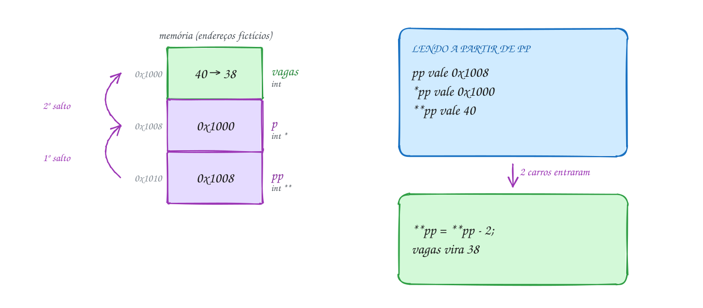
#include <stdio.h>
int main(void) {
int vagas = 40; // vagas livres no estacionamento do shopping
int *p = &vagas; // p guarda o endereço de vagas
int **pp = &p; // pp guarda o endereço de p
printf("&vagas = %p\n", (void *)&vagas);
printf("p = %p (o endereço de vagas)\n", (void *)p);
printf("&p = %p\n", (void *)&p);
printf("pp = %p (o endereço de p)\n", (void *)pp);
printf("*pp = %p (o que tem em p)\n", (void *)*pp);
printf("**pp = %d\n", **pp);
**pp = **pp - 2; // entraram 2 carros: muda vagas em dois saltos
printf("vagas = %d\n", vagas);
return 0;
}
// Saída (os endereços mudam a cada execução):
// &vagas = 0x7fe808c00030
// p = 0x7fe808c00030 (o endereço de vagas)
// &p = 0x7fe808c00040
// pp = 0x7fe808c00040 (o endereço de p)
// *pp = 0x7fe808c00030 (o que tem em p)
// **pp = 40
// vagas = 38
&vagas e p são iguais; &p e pp também. Primeiro a corrente é montada,
elo por elo; depois **pp a percorre até vagas:
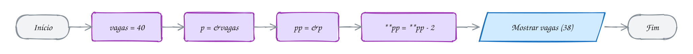
Exemplo A097 · A lista de chamada termina em NULL
#include <stdio.h>
// alunos é um const char **: aponta para a primeira casa de um vetor de
// ponteiros. A lista termina numa casa NULL, então nem precisa do tamanho
int conta_com_letra(const char **alunos, char letra) {
int total = 0;
for (const char **p = alunos; *p != NULL; p++) { // *p: um nome
if (**p == letra) { // **p: a 1ª letra dele
total++;
}
}
return total;
}
int main(void) {
const char *turma[] = {"Bruna", "Caio", "Beto", "Davi", "Bia", NULL};
for (const char **p = turma; *p != NULL; p++) {
printf("%-6s começa com %c\n", *p, **p);
}
printf("Com B: %d alunos\n", conta_com_letra(turma, 'B'));
printf("Com Z: %d alunos\n", conta_com_letra(turma, 'Z'));
// caso de borda: lista vazia, só a marca do fim
const char *vazia[] = {NULL};
printf("Lista vazia, com B: %d\n", conta_com_letra(vazia, 'B'));
// p + 1 anda uma casa do vetor: 8 bytes, o tamanho de um ponteiro
printf("sizeof turma[0] = %zu\n", sizeof turma[0]);
return 0;
}
// Saída:
// Bruna começa com B
// Caio começa com C
// Beto começa com B
// Davi começa com D
// Bia começa com B
// Com B: 3 alunos
// Com Z: 0 alunos
// Lista vazia, com B: 0
// sizeof turma[0] = 8
gcc ~/LPEDC/material/A097.c -o ~/LPEDC/material/A097 && ~/LPEDC/material/A097
Exemplo A098 · O posto mais barato
#include <stdio.h>
// precisa MUDAR o ponteiro de quem chamou: recebe o endereço dele (double **)
void mais_barato(double *precos, int n, double **escolhido) {
*escolhido = &precos[0];
for (int i = 1; i < n; i++) {
if (precos[i] < **escolhido) {
*escolhido = &precos[i]; // o ponteiro do main passa a apontar aqui
}
}
}
int main(void) {
double precos[4] = {5.89, 5.74, 5.92, 5.79}; // gasolina em 4 postos
double *posto = NULL;
mais_barato(precos, 4, &posto); // &posto: o endereço do ponteiro
if (posto != NULL) {
printf("Mais barato: posto %td, R$ %.2f\n", posto - precos, *posto);
*posto -= 0.10; // cupom do app: 10 centavos a menos
}
for (int i = 0; i < 4; i++) {
printf("%.2f ", precos[i]);
}
printf("\n");
return 0;
}
// Saída:
// Mais barato: posto 1, R$ 5.74
// 5.89 5.64 5.92 5.79
gcc ~/LPEDC/material/A098.c -o ~/LPEDC/material/A098 && ~/LPEDC/material/A098
Exercício E289 · ★☆☆
A turma do cursinho é identificada por uma letra. Declare
char turma = 'k';
char *p = &turma;
char **pp = &p;
Mostre a letra de três jeitos (pela variável, por p e por pp). Depois, usando só pp, troque a letra para 'K' e mostre a variável turma.
Saída esperada:
k k k
Agora: K
Exercício E291 · ★★☆
A loja recebe mensagens como "Pedido numero 4521 confirmado". Escreva
void pula_ate_digito(const char **s)
que avança o ponteiro DE QUEM CHAMOU até o primeiro dígito do texto (ou até o '\0', se não houver dígito). No main:
const char *msg = "Pedido numero 4521 confirmado";
pula_ate_digito(&msg);
printf("%s\n", msg);
Saída esperada:
4521 confirmado
Teste também com "Sem numero": deve sair uma linha vazia.
Exercício E292 · ★★☆
Num leilão, escreva a função
void aponta_maior(int *a, int *b, int **res)
que faz o ponteiro apontado por res passar a apontar para o maior dos dois lances (a ou b). No main, com lance1 = 870 e lance2 = 640, declare int *vencedor = NULL, chame a função e mostre o valor do maior lance pelo ponteiro vencedor.
Saída esperada:
Maior lance: R$ 870
Exercício E293 · ★★★
Quatro jurados deram notas a uma escola de samba, cada uma numa variável:
int j1 = 9, j2 = 7, j3 = 10, j4 = 8;
Você quer mostrar as notas em ordem crescente SEM mexer nas variáveis. Monte um vetor de ponteiros int *ordem[4] = {&j1, &j2, &j3, &j4}; e ordene OS PONTEIROS pelo valor apontado. Para trocar dois ponteiros do vetor, escreva
void troca_ptr(int **a, int **b)
No fim, mostre as notas pela ordem e depois as variáveis originais.
Saída esperada:
Em ordem: 7 8 9 10
Originais: j1=9 j2=7 j3=10 j4=8
Às vezes uma função precisa receber outra função. Uma rotina que conta dias quentes e outra que conta dias frios fazem quase a mesma coisa: andam pelo vetor de temperaturas e contam quem passa num teste. Só o teste muda. Escrever uma função por teste repete o laço inteiro. O ideal seria uma rotina só, que recebesse o teste pronto e se limitasse a chamá-lo. Em C, o mecanismo para isso é um ponteiro.
O raciocínio começa na memória. O código de uma função também fica guardado nela, numa área própria, a área de código. Se a função mora num lugar, ela tem endereço, e o nome da função, sem parênteses, já é esse endereço, do mesmo jeito que o nome de um vetor é o endereço do primeiro item. Uma variável que guarda esse endereço é um ponteiro para função (BACKES, 2013, cap. 13). Pense no número de telefone de um eletricista: você não carrega o eletricista no bolso, só o número, e liga quando precisa.
A declaração parece estranha à primeira vista:
int (*criterio)(int);
Leia de dentro para fora. *criterio diz que criterio é um ponteiro; o
(int) à direita diz que ele aponta para uma função que recebe um int; o
int à esquerda é o que essa função devolve. Os parênteses em volta de
*criterio são obrigatórios. Sem eles, int *criterio(int); declara uma
função chamada criterio que devolve int *, e não um ponteiro (DEITEL;
DEITEL, 2011, cap. 7).
O tipo do ponteiro inclui a assinatura da função, isto é, os tipos dos
parâmetros e do retorno. Por isso criterio só aceita funções que recebem um
int e devolvem int; uma função com outro protótipo não cabe ali (BACKES,
2013, cap. 13).
O uso é curto. criterio = eh_calor; guarda o endereço da função, sem & e
sem parênteses. criterio(31) chama a função apontada, passando 31, como se
criterio fosse o próprio nome dela. A forma (*criterio)(31) também vale e
aparece em código antigo; as duas fazem a mesma chamada (DEITEL; DEITEL,
2011, cap. 7).
O uso típico é passar o ponteiro como parâmetro. A função que o recebe
fica genérica, e quem chama decide o comportamento. A função entregue dessa
forma se chama callback, porque a rotina genérica "liga de volta" para
ela na hora certa (CELES; RANGEL, 2002). Com isso, uma única conta_se
conta dias quentes ou frios, dependendo de qual teste você entrega.
A biblioteca padrão usa esse recurso no qsort, do <stdlib.h>. Ele
ordena um vetor de qualquer tipo, desde que você entregue a função que
compara dois elementos. Essa função recebe dois const void *, os endereços
dos dois elementos (o assunto 0051 explica esse tipo), e devolve um número
negativo se o primeiro vem antes, zero se empatam e positivo se o primeiro
vem depois (KERRISK, s.d.). O A100 ordena a tabela do campeonato assim.
Chamar por ponteiro tem um custo pequeno. É uma chamada indireta: o
processador lê o endereço guardado na variável e salta para ele. Isso impede
o compilador de copiar o corpo da função no lugar da chamada, otimização
chamada inline, então criterio(v[i]) pode sair mais lento que escrever o
teste v[i] >= 30 direto no laço. Na maioria dos programas a diferença não
aparece.
[!WARNING] A comparação "esperta"
return *(const int *)a - *(const int *)b;estoura ointquando os números têm sinais opostos e são grandes (signed integer overflow), e a ordem sai errada. Usereturn (x > y) - (x < y);. E não esqueça os parênteses:int *f(int)é função, não ponteiro.
As máximas da semana estão num vetor. conta_se conta os dias que passam num
critério que ela não conhece: recebe o endereço de eh_calor (ou eh_frio) e
chama por ele:
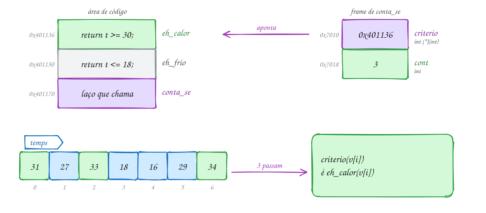
#include <stdio.h>
int eh_calor(int t) { return t >= 30; }
int eh_frio(int t) { return t <= 18; }
// conta quantos elementos passam no teste; QUAL teste, quem chama decide
int conta_se(const int *v, int n, int (*criterio)(int)) {
int cont = 0;
for (int i = 0; i < n; i++) {
if (criterio(v[i])) { // chama a função para onde criterio aponta
cont++;
}
}
return cont;
}
int main(void) {
int temps[7] = {31, 27, 33, 18, 16, 29, 34}; // máximas da semana
int (*regra)(int) = eh_calor; // o nome da função já é o endereço dela
printf("Dias de calor: %d\n", conta_se(temps, 7, regra));
printf("Dias de frio: %d\n", conta_se(temps, 7, eh_frio));
return 0;
}
// Saída:
// Dias de calor: 3
// Dias de frio: 2
É o contador do assunto 0025; a novidade é que a pergunta do losango é a função que chegou pelo parâmetro:
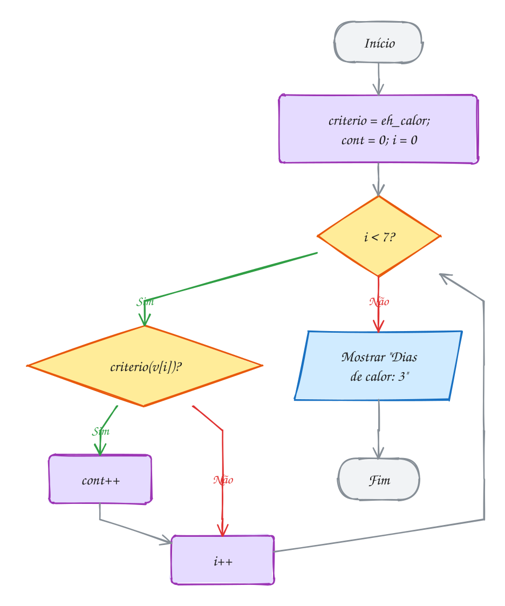
Exemplo A099 · A promoção do dia é um parâmetro
#include <stdio.h>
double menos_dez(double preco) { return preco * 0.90; }
double leve_tres(double preco) { return preco * 2.0 / 3.0; } // leve 3, pague 2
// aplica a regra em cada preço; regra NULL quer dizer "sem promoção hoje"
void aplica(double *precos, int n, double (*regra)(double)) {
if (regra == NULL) {
return; // chamar um ponteiro NULL derrubaria o programa
}
for (int i = 0; i < n; i++) {
precos[i] = regra(precos[i]);
}
}
void mostra(const char *titulo, const double *precos, int n) {
printf("%-10s", titulo);
for (int i = 0; i < n; i++) {
printf(" %6.2f", precos[i]);
}
printf("\n");
}
int main(void) {
double cesta[3] = {30.00, 12.90, 8.40}; // café, biscoito, leite
int dia = 3; // 1 = domingo ... 7 = sábado
double (*regra)(double) = NULL; // o ponteiro escolhe a regra em tempo de execução
if (dia == 3) {
regra = menos_dez; // terça: 10% em tudo
} else if (dia == 5) {
regra = leve_tres;
}
mostra("Antes:", cesta, 3);
aplica(cesta, 3, regra);
mostra("Depois:", cesta, 3);
// ponteiros para função também se comparam com ==
printf("Regra de hoje: %s\n", regra == menos_dez ? "10% off" : "outra");
aplica(cesta, 3, NULL); // nenhuma regra: nada muda
mostra("Sem regra:", cesta, 3);
return 0;
}
// Saída:
// Antes: 30.00 12.90 8.40
// Depois: 27.00 11.61 7.56
// Regra de hoje: 10% off
// Sem regra: 27.00 11.61 7.56
gcc ~/LPEDC/material/A099.c -o ~/LPEDC/material/A099 && ~/LPEDC/material/A099
Exemplo A100 · A tabela do campeonato com qsort
#include <stdio.h>
#include <stdlib.h>
// o qsort entrega ENDEREÇOS de dois elementos como const void *; a função
// converte para o tipo certo e diz quem vem antes (negativo, zero, positivo)
int crescente(const void *a, const void *b) {
int x = *(const int *)a;
int y = *(const int *)b;
return (x > y) - (x < y);
}
int decrescente(const void *a, const void *b) {
return crescente(b, a); // inverte a ordem dos argumentos
}
void mostra(const char *titulo, const int *v, int n) {
printf("%s:", titulo);
for (int i = 0; i < n; i++) {
printf(" %d", v[i]);
}
printf("\n");
}
int main(void) {
int pontos[6] = {45, 61, 38, 52, 57, 40};
qsort(pontos, 6, sizeof pontos[0], crescente);
mostra("Crescente", pontos, 6);
qsort(pontos, 6, sizeof pontos[0], decrescente); // mesmo qsort, outra regra
mostra("Tabela", pontos, 6);
return 0;
}
// Saída:
// Crescente: 38 40 45 52 57 61
// Tabela: 61 57 52 45 40 38
gcc ~/LPEDC/material/A100.c -o ~/LPEDC/material/A100 && ~/LPEDC/material/A100
Exercício E295 · ★☆☆
O app de clima converte temperaturas nos dois sentidos. Escreva
double c_para_f(double c) // f = c * 9 / 5 + 32
double f_para_c(double f) // c = (f - 32) * 5 / 9
Declare um ponteiro double (*conv)(double); faça ele apontar para c_para_f e converta 30; depois aponte para f_para_c e converta 86.
Saída esperada:
30.0 -> 86.0
86.0 -> 30.0
Exercício E297 · ★★☆
Faça uma calculadora SEM switch. Escreva soma, subtrai, multiplica e divide, todas com a assinatura int f(int, int), e guarde-as num vetor de ponteiros para função:
int (*ops[4])(int, int) = {soma, subtrai, multiplica, divide};
Leia uma conta no formato "12 * 4" com scanf("%d %c %d", ...), ache o índice do operador na string "+-*/" e chame ops[indice](a, b). Operador desconhecido mostra "Operador inválido"; divisão por zero mostra "Divisão por zero".
Entrada:
12 * 4
Saída esperada:
Resultado: 48
Entrada:
7 / 0
Saída esperada:
Divisão por zero
Entrada:
3 % 2
Saída esperada:
Operador inválido
Exercício E298 · ★★☆
Ordene as frutas da barraca em ordem alfabética com qsort:
const char *frutas[] = {"manga", "abacaxi", "caju", "banana", "acerola"};
Saída esperada:
abacaxi acerola banana caju manga
O detalhe: cada elemento do vetor é um const char *. O qsort entrega à comparação o ENDEREÇO de um elemento, ou seja, o endereço de um const char * (um ponteiro para ponteiro, assunto 0049).
Exercício E300 · ★★★
Você tem R$ 50 no bolso e quer ver os produtos da lojinha do mais perto desse valor ao mais longe. Ordene com qsort pela distância até 50 (|preço - 50|); em caso de empate, o mais barato vem antes.
int precos[7] = {47, 58, 50, 39, 53, 61, 44};
A função de comparação só recebe dois endereços, então guarde o alvo numa variável global static. Depois de mostrar a ordem para 50, mude o alvo para 60 (você achou mais R$ 10), ordene de novo e mostre.
Saída esperada:
50 47 53 44 58 39 61
61 58 53 50 47 44 39
A função troca do assunto 0046 troca dois int. Para trocar dois double,
você escreveria outra, quase igual; para dois caracteres, mais uma. O
qsort do assunto 0050 tem o mesmo problema ao contrário: ele precisa
receber vetores de qualquer tipo sem saber qual. Falta um ponteiro que aceite
qualquer endereço.
Pense no funcionário dos Correios que carimba e despacha caixas sem abri-las.
Para ele, cada caixa tem um endereço e um peso, e só. Quem recebe abre e
descobre se é um livro ou um tênis. Em C, essa caixa fechada é o void *, o ponteiro genérico: ele guarda o endereço de qualquer dado, seja
int, double, vetor ou outro ponteiro, mas não diz o que mora lá (DEITEL;
DEITEL, 2011, cap. 7).
A primeira regra é a da conversão livre. Em C, qualquer ponteiro para dado
vira void * e volta para o tipo original sem precisar escrever nada:
void *p = &senha; e depois int *q = p; compilam limpos (DEITEL; DEITEL,
2011, cap. 7). Ponteiro para função não entra nessa regra.
A segunda regra é a que dá trabalho: um void * não se desreferencia.
Escrever *p com p do tipo void * não compila, porque o compilador não
sabe quantos bytes ler nem como interpretá-los. Antes de usar o dado, você
diz o tipo com um cast, um tipo entre parênteses na frente da expressão:
*(int *)p primeiro trata p como int * e depois lê o int. Pelo mesmo
motivo, p + 1 não existe no C padrão, já que o compilador não sabe o
tamanho do passo; o gcc aceita como extensão e o -pedantic avisa (BACKES,
2013, cap. 10).
int senha = 1234;
void *p = &senha; // caixa fechada com o endereço de senha
printf("%d\n", *(int *)p); // 1234: o cast diz o que tem dentro
O cast é uma promessa sua, e o compilador acredita nela sem conferir. Se você
diz (double *) para um endereço em que mora um int, ele lê 8 bytes onde
só havia 4 e mostra lixo (BACKES, 2013, cap. 10).
A caixa fechada permite escrever funções que trabalham com qualquer
tipo. Elas recebem void * e, como não conhecem o tamanho do dado,
recebem também o tamanho em bytes. Por dentro, tratam a memória como uma
fileira de bytes, com um unsigned char *, o único tipo que o C deixa olhar
qualquer objeto byte a byte. Assim funcionam memcpy e memset, o qsort
e o malloc do módulo 07, que devolve void * porque não sabe o que você
vai guardar (CELES; RANGEL, 2002).
Olhar os bytes ensina como o computador guarda um número. O A102 espia uma
variável com const unsigned char *. O int 1000, que em hexadecimal é
0x000003E8, aparece como e8 03 00 00: o byte menos significativo vem
primeiro, no endereço menor. Esse arranjo se chama little-endian, e é o
dos processadores Intel, AMD e ARM. Só os tipos char podem fazer essa
leitura com segurança; ler um float por um int * quebra a regra de
strict aliasing, que proíbe acessar um objeto por um ponteiro de outro
tipo.
[!WARNING] O
void *desliga a conferência de tipos:troca_generica(&senha_a, &preco_a, sizeof preco_a)compila sem aviso e troca 8 bytes a partir de uma variável de 4, e o AddressSanitizer acusastack-buffer-overflow. Use osizeofda própria variável, nunca um número digitado à mão.
A troca do assunto 0046 só troca int. A troca_generica recebe dois
endereços sem tipo e o tamanho: com 4, troca duas senhas; com 8, dois preços.
Byte a byte, ela nem sabe o que troca:
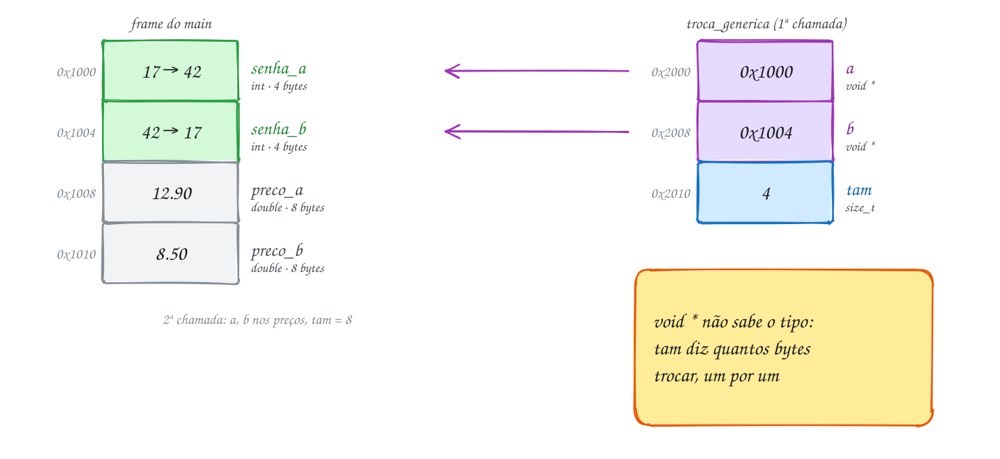
#include <stdio.h>
// void *: "endereço de qualquer coisa". Como a função não sabe o tipo,
// recebe o tamanho em bytes e troca byte a byte.
void troca_generica(void *a, void *b, size_t tam) {
unsigned char *x = a; // void * vira outro ponteiro sem cast, em C
unsigned char *y = b;
for (size_t i = 0; i < tam; i++) {
unsigned char tmp = x[i];
x[i] = y[i];
y[i] = tmp;
}
}
int main(void) {
int senha_a = 17, senha_b = 42; // senhas do atendimento
double preco_a = 12.90, preco_b = 8.50; // preços na etiqueta
troca_generica(&senha_a, &senha_b, sizeof senha_a); // troca 4 bytes
troca_generica(&preco_a, &preco_b, sizeof preco_a); // troca 8 bytes
printf("senhas: %d e %d\n", senha_a, senha_b);
printf("preços: %.2f e %.2f\n", preco_a, preco_b);
return 0;
}
// Saída:
// senhas: 42 e 17
// preços: 8.50 e 12.90
O A102 espia os bytes com const unsigned char *: o int 1000 aparece como
e8 03 00 00, o byte menos significativo primeiro (little-endian).
A função não pergunta "que tipo é?", só "ainda tem byte para trocar?":
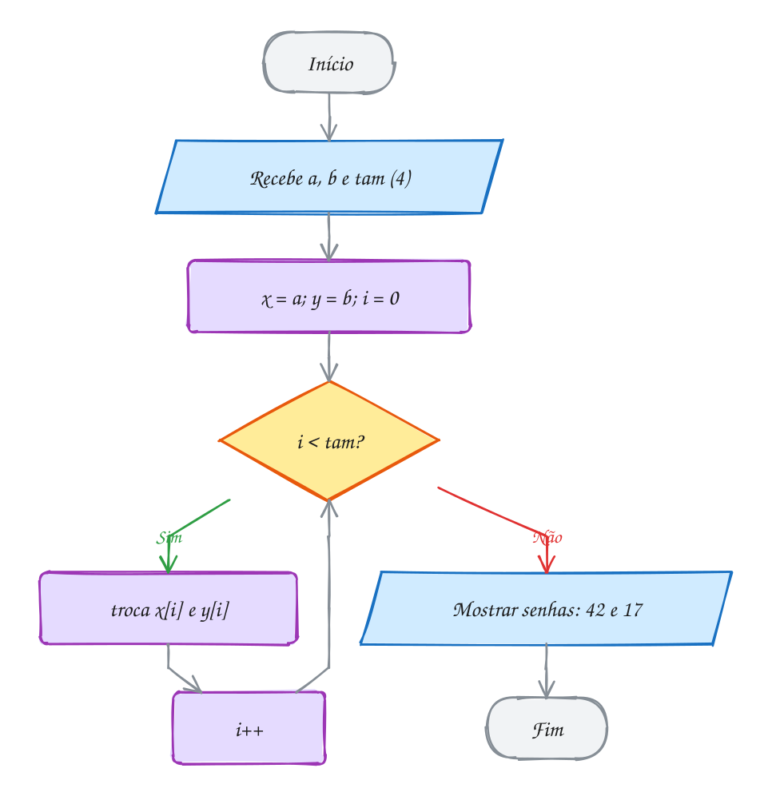
Exemplo A101 · O backup que copia qualquer coisa
#include <stdio.h>
#include <string.h>
// copia tam bytes de origem para destino; const void *: só lê a origem.
// Devolve destino, como o memcpy da string.h
void *copia_bytes(void *destino, const void *origem, size_t tam) {
unsigned char *d = destino;
const unsigned char *o = origem;
for (size_t i = 0; i < tam; i++) {
d[i] = o[i];
}
return destino;
}
int main(void) {
int itens = 7;
double total = 184.35;
int qtd[4] = {2, 1, 6, 3}; // quantidade de cada produto no carrinho
int itens_bkp;
double total_bkp;
int qtd_bkp[4];
copia_bytes(&itens_bkp, &itens, sizeof itens); // 4 bytes
copia_bytes(&total_bkp, &total, sizeof total); // 8 bytes
copia_bytes(qtd_bkp, qtd, sizeof qtd); // o vetor inteiro: 16 bytes
qtd[2] = 0; // o cliente tirou os 6 iogurtes; o backup não muda
printf("itens: %d, total: %.2f\n", itens_bkp, total_bkp);
printf("qtd agora: %d %d %d %d\n", qtd[0], qtd[1], qtd[2], qtd[3]);
printf("qtd backup: %d %d %d %d\n", qtd_bkp[0], qtd_bkp[1], qtd_bkp[2], qtd_bkp[3]);
// o void * devolvido precisa voltar ao tipo certo para ser lido
int *volta = copia_bytes(qtd, qtd_bkp, sizeof qtd); // restaura o carrinho
printf("restaurado: %d (o mesmo endereço de qtd? %d)\n", volta[2], volta == qtd);
// a biblioteca já tem essa função pronta
memcpy(&itens, &itens_bkp, sizeof itens);
printf("memcpy: %d\n", itens);
return 0;
}
// Saída:
// itens: 7, total: 184.35
// qtd agora: 2 1 0 3
// qtd backup: 2 1 6 3
// restaurado: 6 (o mesmo endereço de qtd? 1)
// memcpy: 7
gcc ~/LPEDC/material/A101.c -o ~/LPEDC/material/A101 && ~/LPEDC/material/A101
Exemplo A102 · Os bytes de verdade
#include <stdio.h>
// mostra, em hexa, os bytes que estão a partir de um endereço qualquer
void mostra_bytes(const char *rotulo, const void *p, size_t tam) {
const unsigned char *byte = p;
printf("%-10s", rotulo);
for (size_t i = 0; i < tam; i++) {
printf(" %02x", byte[i]);
}
printf("\n");
}
int main(void) {
int mil = 1000; // 1000 = 0x000003E8
int menos_um = -1;
char pix[] = "Pix";
double meio = 0.5;
mostra_bytes("1000", &mil, sizeof mil);
mostra_bytes("-1", &menos_um, sizeof menos_um);
mostra_bytes("\"Pix\"", pix, sizeof pix);
mostra_bytes("0.5", &meio, sizeof meio);
void *qualquer = &mil;
printf("de volta: %d\n", *(int *)qualquer); // para ler, converta para o tipo certo
return 0;
}
// Saída (num PC Intel/AMD ou ARM, que são little-endian):
// 1000 e8 03 00 00
// -1 ff ff ff ff
// "Pix" 50 69 78 00
// 0.5 00 00 00 00 00 00 e0 3f
// de volta: 1000
gcc ~/LPEDC/material/A102.c -o ~/LPEDC/material/A102 && ~/LPEDC/material/A102
Exercício E301 · ★☆☆
No cadastro do plano de saúde, declare int idade = 41 e double altura = 1.83. Use UM único ponteiro void *p: primeiro aponte para idade e mostre o valor; depois aponte para altura e mostre o valor.
Saída esperada:
idade: 41
altura: 1.83
Exercício E303 · ★★☆
Escreva sua versão do memset para zerar qualquer coisa:
void zera(void *p, size_t tam)
que coloca 0 em cada um dos tam bytes a partir de p. Teste zerando o vetor de placar int gols[5] = {2, 1, 3, 0, 4} e a variável double saldo = 99.90. Mostre antes e depois.
Saída esperada:
antes: 2 1 3 0 4 | 99.90
depois: 0 0 0 0 0 | 0.00
Exercício E304 · ★★☆
Escreva uma função que mostra vetores de QUALQUER tipo:
void mostra_vetor(const void *v, size_t n, size_t tam,
void (*mostra)(const void *))
Ela calcula o endereço de cada elemento (o i-ésimo começa i * tam bytes depois do início) e chama mostra com esse endereço. Escreva também mostra_int e mostra_double. Teste com
int senhas[4] = {101, 102, 103, 104};
double notas[3] = {7.5, 9.25, 6.0};
Saída esperada:
101 102 103 104
7.50 9.25 6.00
Exercício E305 · ★★★
Escreva uma busca linear genérica:
int busca(const void *v, size_t n, size_t tam, const void *alvo,
int (*igual)(const void *, const void *))
que devolve o índice do primeiro elemento igual ao alvo (segundo a função igual) ou -1. Use com três vetores:
int cods[5] = {310, 422, 518, 422, 907}; alvo 422
double precos[4] = {9.90, 15.50, 4.25, 30.00}; alvo 4.25
const char *nomes[3] = {"ana", "bia", "caio"}; alvo "caio"
Saída esperada:
422 no índice 1
4.25 no índice 2
caio no índice 2
bruno no índice -1
Sábado, fim de feira. A associação dos feirantes quer o ranking das barracas pelo faturamento do dia e o nome da campeã. Há uma condição: a planilha original não pode mudar de ordem, porque outras contas usam a posição de cada barraca. Ordenar sem mexer nos dados parece contraditório, e resolver isso usa quase tudo o que o módulo mostrou.
Os dados ficam em vetores paralelos: produtos, qtd e preco guardam
o nome, a quantidade vendida e o preço de cada barraca, e a mesma posição
i fala da mesma barraca nos três. O faturamento sai de uma conta por
posição, fat[i] = qtd[i] * preco[i], e vai para um quarto vetor (DEITEL;
DEITEL, 2011, cap. 7).
A ideia central é ordenar ponteiros em vez de dados. Pense no índice
remissivo de um livro: as páginas não mudam de lugar, só a lista que aponta
para elas. Aqui, o índice é um vetor de ponteiros const double *ordem[N] (assunto 0049), em que cada posição aponta para um elemento de
fat. O programa ordena ordem, e fat continua na ordem de sempre (CELES;
RANGEL, 2002).
Quem ordena é o qsort (assunto 0050), com uma função de comparação
escrita por você. Repare no que ela recebe. Os elementos de ordem são
const double *, e o qsort entrega à comparação o endereço de cada
elemento, como const void * (assunto 0051). A função converte esse
endereço para um ponteiro para ponteiro e dá dois saltos, **, até chegar
ao faturamento (KERRISK, s.d.).
Depois da ordenação, ordem[0] aponta para o maior faturamento. Para saber
o nome dessa barraca, falta a posição dela em fat. A subtração de
ponteiros (assunto 0047) resolve: ordem[i] - fat dá quantos elementos
existem entre o começo de fat e o elemento apontado, que é o índice. O
mesmo índice dá o nome em produtos (KERNIGHAN; RITCHIE, 1989, cap. 5).
O resumo da feira usa a passagem por referência (assunto 0046). A função
resumo devolve duas respostas: o total do dia, num double *, e onde
está o maior faturamento, num const double **. O segundo parâmetro tem dois
asteriscos porque a função muda um ponteiro do main, fazendo-o apontar para
a campeã (DEITEL; DEITEL, 2011, cap. 7).
Com tantos const e *, as declarações ficam longas. A técnica é ler da
direita para a esquerda: const double * const *p é "p é ponteiro para um
ponteiro constante para double constante". Cada const protege o que está
imediatamente à esquerda dele, ou o tipo, quando vem no começo (DEITEL;
DEITEL, 2011, cap. 7).
Ordenar ponteiros é uma técnica clássica por dois motivos. Cada troca do
qsort move só 8 bytes, mesmo que cada dado seja uma struct de 200 bytes
(módulo 08). E vários vetores de ponteiros, um por faturamento e outro por
nome, podem existir ao mesmo tempo sobre os mesmos dados; é a ideia dos
índices de um banco de dados.
[!WARNING]
sizeof(double)noqsortdeordemestá errado: os elementos são ponteiros. Aqui os dois têm 8 bytes e o erro se esconde; comint *ordem[]esizeof(int), oqsorttrocaria meio ponteiro. Escreva sempresizeof ordem[0].
Fim de feira, 4 barracas: tomate (30 × R$ 6,50), alface (45 × R$ 3,00), queijo
(8 × R$ 32,00) e pastel (60 × R$ 9,00). Depois do qsort, ordem[0] aponta
para o pastel e ordem[3] para a alface, e fat segue igual:
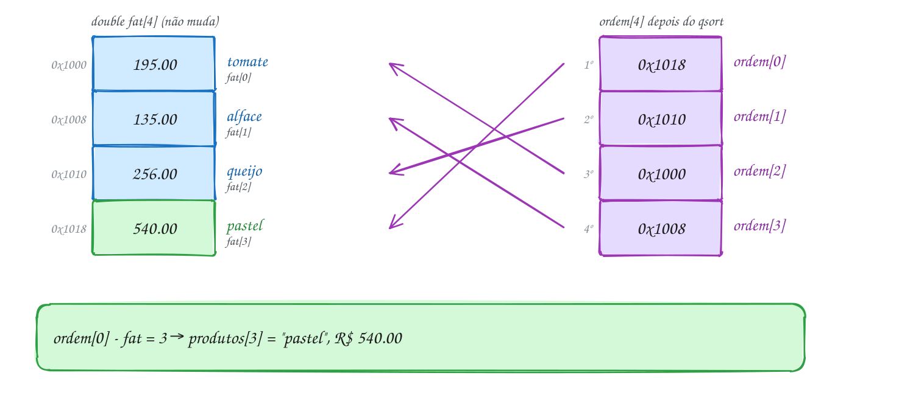
#include <stdio.h>
#include <stdlib.h>
#define N 4
// devolve dois resultados: o total (double *) e ONDE está o maior (const double **)
void resumo(const double *v, int n, double *total, const double **maior) {
*total = 0;
*maior = v;
for (const double *p = v; p < v + n; p++) {
*total += *p;
if (*p > **maior) {
*maior = p;
}
}
}
// cada elemento de ordem é um const double *; o qsort entrega o ENDEREÇO dele
int maior_primeiro(const void *a, const void *b) {
double x = **(const double * const *)a;
double y = **(const double * const *)b;
return (x < y) - (x > y); // decrescente
}
int main(void) {
const char *produtos[N] = {"tomate", "alface", "queijo", "pastel"};
int qtd[N] = {30, 45, 8, 60};
double preco[N] = {6.50, 3.00, 32.00, 9.00};
double fat[N]; // faturamento de cada barraca
const double *ordem[N]; // ponteiros para fat: é isso que vamos ordenar
for (int i = 0; i < N; i++) {
fat[i] = qtd[i] * preco[i];
ordem[i] = &fat[i];
}
qsort(ordem, N, sizeof ordem[0], maior_primeiro); // fat continua intacto
for (int i = 0; i < N; i++) {
int k = (int)(ordem[i] - fat); // ponteiro - início = índice do produto
printf("%dº %-7s R$ %7.2f\n", i + 1, produtos[k], *ordem[i]);
}
double total;
const double *maior;
resumo(fat, N, &total, &maior);
printf("Total: R$ %.2f Campeão: %s\n", total, produtos[maior - fat]);
return 0;
}
// Saída:
// 1º pastel R$ 540.00
// 2º queijo R$ 256.00
// 3º tomate R$ 195.00
// 4º alface R$ 135.00
// Total: R$ 1126.00 Campeão: pastel
Três fases: calcula e aponta, ordena os ponteiros e percorre a ordem nova, traduzindo cada ponteiro em índice:
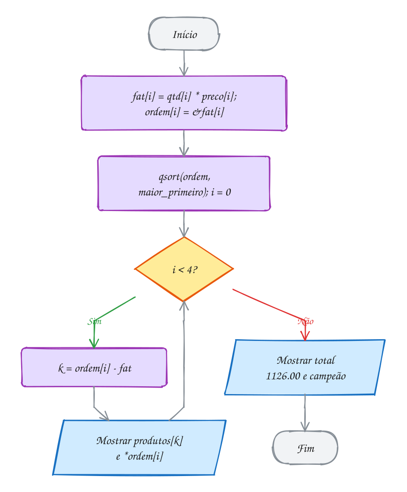
Exemplo A103 · A lista de compras picada no lugar
#include <stdio.h>
#include <stdlib.h>
#include <string.h>
// corta a linha nos ';' (trocando cada um por '\0') e guarda em campos o
// endereço do começo de cada pedaço. Nada é copiado: os pedaços continuam
// morando dentro de linha. Devolve quantos pedaços achou
int separa(char *linha, char **campos, int max) {
int n = 0;
char *p = linha;
while (n < max) {
campos[n++] = p; // um pedaço começa aqui
while (*p != '\0' && *p != ';') {
p++;
}
if (*p == '\0') {
break; // fim da linha: último pedaço
}
*p = '\0'; // corta
p++; // o próximo começa depois do corte
}
return n;
}
// o qsort entrega o endereço de cada char *: um char ** disfarçado de void *
int alfabetica(const void *a, const void *b) {
const char *x = *(char *const *)a;
const char *y = *(char *const *)b;
return strcmp(x, y);
}
int main(void) {
char linha[] = "cafe;arroz;leite;banana;feijao";
char *itens[10];
int n = separa(linha, itens, 10);
qsort(itens, (size_t)n, sizeof itens[0], alfabetica); // ordena os ponteiros
for (int i = 0; i < n; i++) {
// a posição na linha original sai da distância entre ponteiros
printf("%d. %-7s (byte %2td da linha)\n", i + 1, itens[i], itens[i] - linha);
}
// a linha agora tem '\0' no lugar dos ';': o printf para no primeiro
printf("linha depois: %s\n", linha);
// caso de borda: um campo vazio entre dois ';' também vira um pedaço
char outra[] = "pao;;ovos";
n = separa(outra, itens, 10);
printf("%d pedaços, o do meio tem %zu letras\n", n, strlen(itens[1]));
return 0;
}
// Saída:
// 1. arroz (byte 5 da linha)
// 2. banana (byte 17 da linha)
// 3. cafe (byte 0 da linha)
// 4. feijao (byte 24 da linha)
// 5. leite (byte 11 da linha)
// linha depois: cafe
// 3 pedaços, o do meio tem 0 letras
gcc ~/LPEDC/material/A103.c -o ~/LPEDC/material/A103 && ~/LPEDC/material/A103
Exemplo A104 · O caixa eletrônico de comandos
#include <stdio.h>
#include <string.h>
int deposita(int *saldo, int valor) {
*saldo += valor;
return 1;
}
int saca(int *saldo, int valor) {
if (valor > *saldo) {
return 0; // negado: o saldo não muda
}
*saldo -= valor;
return 1;
}
// tabela de comandos: o nome na posição i corresponde à função na posição i
const char *nomes[] = {"deposito", "saque"};
int (*acoes[])(int *, int) = {deposita, saca};
int indice_do(const char *comando) {
for (int i = 0; i < 2; i++) {
if (strcmp(nomes[i], comando) == 0) {
return i;
}
}
return -1;
}
int main(void) {
int saldo = 100;
const char *roteiro[] = {"deposito", "saque", "pix", "saque"};
int valores[] = {200, 50, 30, 500};
for (int i = 0; i < 4; i++) {
int k = indice_do(roteiro[i]);
if (k < 0) {
printf("%-9s %4d: comando desconhecido\n", roteiro[i], valores[i]);
} else if (acoes[k](&saldo, valores[i])) { // chama pela tabela
printf("%-9s %4d: ok, saldo %d\n", roteiro[i], valores[i], saldo);
} else {
printf("%-9s %4d: negado, saldo %d\n", roteiro[i], valores[i], saldo);
}
}
return 0;
}
// Saída:
// deposito 200: ok, saldo 300
// saque 50: ok, saldo 250
// pix 30: comando desconhecido
// saque 500: negado, saldo 250
gcc ~/LPEDC/material/A104.c -o ~/LPEDC/material/A104 && ~/LPEDC/material/A104
Exercício E307 · ★☆☆
O caixa da padaria precisa separar reais e centavos para imprimir o cupom. Escreva
void separa(double valor, int *reais, int *centavos)
e teste com 37.85, 0.99 e 19.99.
Saída esperada:
R$ 37.85 = 37 reais e 85 centavos
R$ 0.99 = 0 reais e 99 centavos
R$ 19.99 = 19 reais e 99 centavos
gcc ~/LPEDC/material/E307.c -o ~/LPEDC/material/E307 -lm && ~/LPEDC/material/E307
Exercício E309 · ★★☆
Três corredores terminaram a prova com os tempos (em minutos) guardados em variáveis soltas: ana = 31, bia = 7, caio = 19. Escreva
void ordena3(int *a, int *b, int *c)
que deixa os três valores em ordem crescente (a o menor, c o maior) usando só a função troca do assunto 0046, chamada no máximo 3 vezes. Teste com várias ordens.
Saída esperada:
7 19 31
Exercício E310 · ★★☆
O mapa do jogo de viagem lista as capitais pelo tamanho do nome (do mais curto ao mais comprido); empates ficam em ordem alfabética. Ordene com qsort:
const char *capitais[] = {"Natal", "Rio Branco", "Recife", "Palmas",
"Maceio", "Salvador", "Teresina", "Aracaju"};
Saída esperada:
Natal Maceio Palmas Recife Aracaju Salvador Teresina Rio Branco
Exercício E312 · ★★★
Escreva um "máximo" genérico, que serve para vetores de qualquer tipo:
void *maximo(void *v, size_t n, size_t tam,
int (*cmp)(const void *, const void *))
que devolve o ENDEREÇO do maior elemento (o primeiro, em caso de empate) segundo a comparação cmp, ou NULL se n for 0. Teste com
int pontos[5] = {12, 47, 33, 47, 5};
const char *frutas[4] = {"uva", "maca", "laranja", "abacate"};
usando três comparações: inteiros, ordem alfabética (strcmp) e tamanho do nome. Mostre o valor e o índice (subtraindo ponteiros). Depois, use o endereço devolvido para zerar o maior inteiro dentro do vetor.
Saída esperada:
maior pontuação: 47 (índice 1)
última no alfabeto: uva (índice 0)
nome mais comprido: laranja (índice 2)
depois de zerar: 12 0 33 47 5
30 exercícios que misturam os assuntos do módulo, no ritmo da prova. Arquivos P0601.c a P0630.c, em material/; resoluções em _respostas/06-ponteiros/lista/.
Exercício P0601 · ★☆☆ · O placar pelo ponteiro
O narrador anotou os gols de Remo x Paysandu numa string, na ordem em que saíram: 'R' é gol do Remo e 'P' é gol do Paysandu.
char gols[] = "RPPRRPR";
Declare int remo = 0, paysandu = 0; e, para cada letra, faça um ponteiro int *alvo apontar para a variável do time que marcou e some o gol com (*alvo)++. A soma é feita SEMPRE pelo ponteiro, numa linha só. Mostre o placar parcial a cada gol:
Saída esperada:
Gol 1 (Remo): Remo 1 x 0 Paysandu
Gol 2 (Paysandu): Remo 1 x 1 Paysandu
Gol 3 (Paysandu): Remo 1 x 2 Paysandu
Gol 4 (Remo): Remo 2 x 2 Paysandu
Gol 5 (Remo): Remo 3 x 2 Paysandu
Gol 6 (Paysandu): Remo 3 x 3 Paysandu
Gol 7 (Remo): Remo 4 x 3 Paysandu
Resposta esperada: a saída acima (4 x 3 para o Remo).
Exercício P0602 · ★☆☆ · As leituras até o -1
O hidrômetro manda o consumo diário (em litros) e o -1 marca o fim das leituras:
int leituras[] = {312, 280, 455, 301, 298, -1};
Sem usar colchetes depois da declaração, ande com um ponteiro p de leituras até achar o -1, somando o consumo. No fim, use a diferença de ponteiros p - leituras para saber quantas leituras eram e mostre a média:
Saída esperada:
Leituras: 5
Total: 1646 litros
Média: 329.20 litros por dia
Resposta esperada: a saída acima (5 leituras, média 329.20 litros).
Exercício P0603 · ★☆☆ · Rachando a conta do bar
Escreva
bool rachar(double total, int pessoas, double *por_pessoa, double *gorjeta)
que calcula os 10% do garçom (em *gorjeta) e quanto cada pessoa paga com a gorjeta incluída (em *por_pessoa). Se pessoas for menor que 1, a função devolve false e não mexe em nada. Teste com R$ 186.00 para 4 pessoas, R$ 95.50 para 3 e R$ 50.00 para 0:
Saída esperada:
R$ 186.00 / 4: gorjeta R$ 18.60, cada um paga R$ 51.15
R$ 95.50 / 3: gorjeta R$ 9.55, cada um paga R$ 35.02
R$ 50.00 / 0: ninguém para pagar
Exercício P0604 · ★☆☆ · A placa no padrão Mercosul
O despachante digitou as placas em minúsculas. Escreva void maiusculas(char *s), que passa a string para maiúsculas andando com o próprio ponteiro s até o '\0' (sem índice), e bool padrao_mercosul(const char *p), que confere o formato LLLNLNN (3 letras, 1 dígito, 1 letra, 2 dígitos). Teste:
char placas[3][8] = {"rio2a18", "abc1234", "qxz9b07"};
Saída esperada:
RIO2A18: Mercosul
ABC1234: modelo antigo
QXZ9B07: Mercosul
Exercício P0605 · ★☆☆ · Troca de plantão
O hospital guarda quem está de plantão em dois ponteiros para string:
const char *dia = "Dra. Socorro";
const char *noite = "Dr. Wanderley";
Escreva void troca_plantao(const char **a, const char **b), que troca para onde os dois ponteiros apontam (as strings não mudam de lugar: só os ponteiros). Mostre a escala antes e depois e, para provar que nenhum texto foi copiado, mostre o endereço guardado em dia antes e o guardado em noite depois (são o mesmo):
Saída esperada (os endereços mudam a cada execução):
Antes: dia = Dra. Socorro, noite = Dr. Wanderley
Depois: dia = Dr. Wanderley, noite = Dra. Socorro
dia antes: 0x55d0c3a01004
noite depois: 0x55d0c3a01004
Resposta esperada: a saída acima, com as duas últimas linhas iguais.
Exercício P0606 · ★☆☆ · O pódio do campeonato
Os pontos dos 8 times do campeonato amazonense, fora de ordem:
int pontos[8] = {21, 34, 18, 29, 34, 12, 25, 30};
Ordene do MAIOR para o menor com qsort, escrevendo a função de comparação int decrescente(const void *a, const void *b). Mostre a tabela e o pódio:
Saída esperada:
Tabela: 34 34 30 29 25 21 18 12
1º: 34 pontos
2º: 34 pontos
3º: 30 pontos
Exercício P0607 · ★☆☆ · A regra de desconto como parâmetro
A loja tem três promoções, cada uma uma função double regra(double preco):
Escreva double total_com(const double *precos, int n, double (*regra)(double)), que soma os preços depois de aplicar a regra recebida em cada um. Para o carrinho abaixo, mostre o total sem desconto e com cada promoção:
double carrinho[4] = {129.90, 8.50, 45.00, 210.00};
Saída esperada:
Sem desconto R$ 393.40
Black Friday R$ 275.38
Cupom R$ 10 R$ 354.90
Leve mais R$ 376.40
Exercício P0608 · ★☆☆ · Conserte os ponteiros soltos
O programa da bilheteria tem DOIS erros de propósito, e o gcc avisa dos dois. Um ponteiro é usado sem apontar para nada, e uma função devolve o endereço de uma variável que deixa de existir quando ela termina. Rode, leia os avisos (warning) e conserte sem mudar o que o programa mostra:
Saída esperada:
Público do dia: 229
Sessão mais cheia: 142
Exercício P0609 · ★☆☆ · Uma função que mostra qualquer coisa
O painel do posto mostra dados de tipos diferentes. Escreva
void mostrar(const char *rotulo, const void *p, char tipo)
em que tipo diz o que existe no endereço p: 'i' (int), 'd' (double), 'c' (char) ou 's' (string). A função converte p para o tipo certo antes de ler. No main, mostre as quatro variáveis abaixo com ela:
int bomba = 3;
double litro = 6.29;
char combustivel = 'G';
char frentista[] = "Rosinete";
Saída esperada:
Bomba: 3
Litro: R$ 6.29
Tipo: G
Frentista: Rosinete
Exercício P0610 · ★☆☆ · O maior da matriz por um ponteiro só
A matriz guarda as vendas de 3 vendedores (linhas) em 4 semanas (colunas):
int v[3][4] = {{12, 18, 9, 14}, {20, 7, 16, 11}, {13, 15, 22, 8}};
Na memória, as 12 casas ficam uma depois da outra, linha por linha. Use um único ponteiro int *p = &v[0][0] e ande pelas 12 casas com p++ (sem v[i][j]) para achar o maior valor. Depois, com a POSIÇÃO dele no bloco (k = p_maior - &v[0][0]), descubra a linha (k / 4) e a coluna (k % 4):
Saída esperada:
Maior venda: 22
Posição no bloco: 10
Vendedor (linha): 2
Semana (coluna): 2
Resposta esperada: a saída acima (22 na posição 10: linha 2, coluna 2).
Exercício P0611 · ★★☆ · Lado par, lado ímpar
O carteiro recebeu as cartas de uma rua fora de ordem e quer separar o lado par do lado ímpar antes de sair:
int casas[10] = {15, 8, 23, 42, 7, 10, 31, 6, 19, 4};
Escreva int separar(int *v, int n), que deixa os pares no começo e os ímpares no fim, NO PRÓPRIO VETOR, e devolve quantos pares há. Use dois ponteiros: esq começa no primeiro elemento e dir no último. Enquanto esq < dir: avance esq enquanto ele for par, recue dir enquanto ele for ímpar e, se os dois ainda não se cruzaram, troque *esq com *dir. Mostre o vetor e onde começa o lado ímpar:
Saída esperada:
4 8 6 42 10 7 31 23 19 15
Pares: 5 casas; o lado ímpar começa na posição 5
Exercício P0612 · ★★☆ · O qsort numa matriz de char
Os bairros de Manaus estão numa matriz de char (cada linha é uma string de até 19 letras), não num vetor de ponteiros:
char bairros[6][20] = {"Flores", "Adrianopolis", "Compensa",
"Aleixo", "Educandos", "Cachoeirinha"};
Ordene com qsort em ordem alfabética. Cuidado: aqui cada elemento é uma LINHA de 20 bytes, não um char *. O tamanho do elemento é sizeof bairros[0], e o que chega na comparação é o endereço do primeiro char da linha. Mostre também quantos bytes o qsort move a cada troca:
Saída esperada:
1. Adrianopolis
2. Aleixo
3. Cachoeirinha
4. Compensa
5. Educandos
6. Flores
Cada elemento tem 20 bytes
Exercício P0613 · ★★☆ · O filtro do extrato do Pix
O extrato do mês tem estes valores (positivo é entrada, negativo é saída):
int pix[10] = {1500, -89, -230, 45, -12, 3200, -1450, -75, 300, -640};
Escreva int filtrar(const int *v, int n, int *saida, bool (*passa)(int)), que copia para saida, na ordem, só os valores para os quais passa devolve true, e devolve quantos copiou. Escreva três critérios e mostre o resultado de cada um com a soma:
Saída esperada:
Entradas: 1500 45 3200 300 (4 itens, soma 5045)
Saídas grandes: -230 -1450 -640 (3 itens, soma -2320)
Miúdos: -89 45 -12 -75 (4 itens, soma -131)
Exercício P0614 · ★★☆ · A extensão do arquivo
O sistema de upload precisa da extensão de cada arquivo. Escreva
const char *extensao(const char *nome);
que devolve um ponteiro para o texto DEPOIS do último ponto do nome (dentro da própria string, sem copiar nada). Se não houver ponto, ou se o único ponto for o primeiro caractere (arquivo oculto, como ".bashrc"), devolve um ponteiro para o '\0' do fim (string vazia). Teste:
const char *arquivos[5] = {"relatorio.final.pdf", "foto.JPG", "LEIAME",
".bashrc", "backup.tar.gz"};
Mostre cada nome, a extensão entre colchetes e em que posição do nome ela começa (diferença de ponteiros):
Saída esperada:
relatorio.final.pdf [pdf] posição 16
foto.JPG [JPG] posição 5
LEIAME [] posição 6
.bashrc [] posição 7
backup.tar.gz [gz] posição 11
Exercício P0615 · ★★☆ · Troque o prato do cardápio
O cardápio do dia é um vetor de ponteiros para string:
const char *cardapio[5] = {"Tacacá", "Pato no tucupi", "Tambaqui assado",
"Vatapá", "Maniçoba"};
Escreva const char **achar(const char **itens, int n, const char *prato), que devolve o ENDEREÇO da gaveta do vetor onde está o prato (ou NULL). Com esse endereço, o main troca o prato sem saber o índice: *gaveta = "novo". Escreva também void mostrar(const char **itens, int n). Troque "Vatapá" por "Caldeirada", tente trocar "Feijoada" e mostre o cardápio:
Saída esperada:
Vatapá trocado por Caldeirada (gaveta 3)
Feijoada não está no cardápio
1. Tacacá
2. Pato no tucupi
3. Tambaqui assado
4. Caldeirada
5. Maniçoba
Exercício P0616 · ★★☆ · Ordem alfabética sem ligar para maiúsculas
A lista de convidados foi digitada de qualquer jeito:
const char *convidados[6] = {"bruna", "Ademir", "carlos", "Beatriz",
"ana", "Caio"};
Com strcmp, as maiúsculas vêm antes de todas as minúsculas ('Z' é 90 e 'a' é 97). Escreva int compara_sem_caixa(const char *a, const char *b), que compara letra a letra com tolower, andando com os dois ponteiros, e use-a numa função de comparação para o qsort. Mostre a lista nas duas ordens:
Saída esperada:
strcmp: Ademir Beatriz Caio ana bruna carlos
sem caixa: Ademir ana Beatriz bruna Caio carlos
Exercício P0617 · ★★☆ · Conserte o reajuste dos preços
A cantina vai subir R$ 1 em todos os preços. O programa abaixo tem DOIS erros de propósito na parte dos ponteiros. O gcc avisa de um (leia o warning); o outro, o AddressSanitizer acusa quando roda. Conserte os dois. O programa deve mostrar:
Saída esperada:
5 8 4 11 7
Total: R$ 35
Exercício P0618 · ★★☆ · Ponteiro para uma linha inteira
Numa matriz int m[3][4], o nome m vira um ponteiro para a primeira LINHA: o tipo é int (*)[4], e m + 1 pula 4 int de uma vez. Com as notas de 3 alunos em 4 provas,
int notas[3][4] = {{7, 8, 6, 9}, {5, 6, 7, 4}, {10, 9, 9, 8}};
escreva void medias(int (*linha)[4], int n, double *saida), que anda com o ponteiro linha (linha++) pelas n linhas e calcula a média de cada uma em saida[i]. Mostre as médias e, para ver o salto, sizeof *linha e a distância em bytes entre notas e notas + 1:
Saída esperada:
Aluno 1: 7.50
Aluno 2: 5.50
Aluno 3: 9.00
sizeof *p = 16 bytes
notas + 1 fica 16 bytes depois de notas
Exercício P0619 · ★★☆ · Média e desvio de uma vez
Uma corredora anotou os tempos (em minutos) dos seus treinos de 5 km:
double tempos[6] = {28.5, 27.9, 30.2, 26.8, 29.1, 27.5};
Escreva bool estatisticas(const double *v, int n, double *media, double *desvio), que devolve false se n < 1 e, senão, entrega a média e o desvio padrão (populacional) pelos ponteiros. Mostre os dois e quais treinos ficaram abaixo da média:
Saída esperada:
Média: 28.33 min
Desvio: 1.11 min
Abaixo da média: treino 2 (27.9) treino 4 (26.8) treino 6 (27.5)
Resposta esperada: a saída acima (média 28.33, desvio 1.11).
gcc ~/LPEDC/material/P0619.c -o ~/LPEDC/material/P0619 -lm && ~/LPEDC/material/P0619
Exercício P0620 · ★★☆ · Três ordens para o mesmo vetor
O sorteio de uma rifa tirou estes números:
int sorteados[8] = {47, 12, 85, 30, 9, 66, 21, 58};
Escreva void ordenar_e_mostrar(const char *nome, const int *orig, int n, int (*cmp)(const void *, const void *)), que copia orig para um vetor local, ordena a cópia com qsort usando a comparação recebida e mostra o resultado. Escreva três comparações:
Saída esperada:
Crescente: 9 12 21 30 47 58 66 85
Decrescente: 85 66 58 47 30 21 12 9
Pares primeiro: 12 30 58 66 9 21 47 85
Exercício P0621 · ★★★ · O ranking do processo seletivo
No resultado de um processo seletivo, cada candidato é uma linha de uma matriz de int com {inscrição, nota (de 0 a 100), idade}:
int cand[7][3] = {{1043, 82, 29}, {1007, 91, 33}, {1120, 82, 41},
{1088, 75, 26}, {1015, 91, 33}, {1102, 82, 41},
{1061, 68, 52}};
Ordene com qsort, e cada ELEMENTO é uma linha inteira (int[3]). A ordem é: nota maior primeiro; no empate, o mais velho primeiro (como no edital do mestrado); persistindo o empate, a menor inscrição. Mostre a classificação:
Saída esperada:
Pos Inscr Nota Idade
1º 1007 91 33
2º 1015 91 33
3º 1102 82 41
4º 1120 82 41
5º 1043 82 29
6º 1088 75 26
7º 1061 68 52
Exercício P0622 · ★★★ · O meu qsort de qualquer tipo
Escreva a sua versão genérica de ordenação, com a mesma assinatura do qsort:
void ordenar(void *base, size_t n, size_t tam,
int (*cmp)(const void *, const void *));
Use o método de inserção: para cada i de 1 a n - 1, enquanto o elemento j - 1 for maior que o j (segundo cmp), troque os dois e recue j. Como você não sabe o tipo, trabalhe com bytes: o elemento i começa em (unsigned char *) base + i * tam, e a troca é byte a byte (escreva void troca_bytes(void *a, void *b, size_t tam)). Teste com os três vetores:
int idades[6] = {34, 19, 52, 27, 19, 40};
double precos[5] = {9.90, 2.49, 15.00, 4.75, 2.10};
char cidades[5][12] = {"Tefe", "Coari", "Borba", "Manaus", "Autazes"};
Saída esperada:
Idades: 19 19 27 34 40 52
Preços: 2.10 2.49 4.75 9.90 15.00
Cidades: Autazes Borba Coari Manaus Tefe
Exercício P0623 · ★★★ · Separar a linha do CSV no lugar
Uma linha de CSV da agenda do mestrado tem campos separados por ';', e alguns podem estar vazios:
char linha[] = "27/11/2026;Prova de Conhecimentos;;08:00;Manaus";
Escreva int separar(char *linha, char sep, char *campos[], int max), que NÃO copia nada: troca cada separador por '\0' dentro da própria linha e guarda em campos[i] o endereço do começo de cada campo. Devolve quantos campos achou (no máximo max). Campo vazio vira uma string vazia, e não some (diferente do strtok, que pula separadores seguidos). Mostre os campos e a posição de cada um dentro da linha:
Saída esperada:
5 campos
[0] posição 0: "27/11/2026"
[1] posição 11: "Prova de Conhecimentos"
[2] posição 34: ""
[3] posição 35: "08:00"
[4] posição 41: "Manaus"
A linha agora: "27/11/2026"
Exercício P0624 · ★★★ · Números romanos nos dois sentidos
Os capítulos de um livro antigo vêm em algarismos romanos. Escreva:
int romano_para_int(const char *s);
void int_para_romano(int n, char *saida);
A primeira anda com um ponteiro pela string: cada símbolo soma seu valor, mas se o próximo for MAIOR, ele subtrai (IV = 4, XC = 90). A segunda escreve o romano em saida, avançando um ponteiro de escrita. Converta os romanos "XIV", "XCIX", "MMXXVI" e "CDXLIV" para int, e 1987, 3999 e 49 para romano:
Saída esperada:
XIV = 14
XCIX = 99
MMXXVI = 2026
CDXLIV = 444
1987 = MCMLXXXVII
3999 = MMMCMXCIX
49 = XLIX
Exercício P0625 · ★★★ · Conserte a escala de folgas
O programa da escala de folgas tem TRÊS erros de propósito, e o gcc não avisa de nenhum. Ele deveria: trocar o primeiro e o último da equipe de lugar, ordenar a equipe em ordem alfabética e montar o crachá do primeiro da lista. Rode com o rodar e compare com a saída esperada: a troca não troca e a ordem sai errada. Conserte esses dois; aí o AddressSanitizer passa a acusar o terceiro (é comum um erro esconder o outro). No fim, o programa mostra:
Saída esperada:
Trocados: Wellington Rui Mirela Edson Joana
Em ordem: Edson Joana Mirela Rui Wellington
Crachá do último: Wellington
Exercício P0626 · ★★★ · O ponto de equilíbrio pela bisseção
Uma fábrica de açaí em pó tem lucro, em milhares de reais, de lucro(x) = -0.5x² + 12x - 40 quando produz x toneladas. Ela quer saber a partir de quantas toneladas o lucro deixa de ser negativo: a RAIZ de lucro entre 0 e 10. Escreva o método da bisseção, que serve para QUALQUER função:
double bissecao(double (*f)(double), double a, double b, double tol,
int *voltas);
Se f(a) e f(b) têm sinais opostos, existe raiz entre eles. Olhe o meio m: se f(a) e f(m) têm sinais opostos, a raiz está em [a, m]; senão, em [m, b]. Repita até o intervalo ficar menor que tol e devolva o meio. Use tol = 0.0001 e resolva também x³ - x - 2 = 0 entre 1 e 2:
Saída esperada:
lucro: raiz 4.0000 em 17 voltas (f = -0.00018)
x³ - x - 2: raiz 1.5214 em 14 voltas (f = 0.00008)
lucro: sem troca de sinal em [5.0, 10.0]
Exercício P0627 · ★★★ · Multiplicar matrizes guardadas em fila
Quando as dimensões mudam, é comum guardar a matriz num vetor simples: o elemento (i, j) de uma matriz com C colunas fica em v[i * C + j]. Escreva
void multiplicar(const int *a, const int *b, int *c, int l, int m, int n);
que calcula c = a x b, com a de l x m, b de m x n e c de l x n, todas nesse formato. Escreva também void mostrar(const int *v, int l, int c) e bool identidade(const int *v, int n). Calcule a x b para as matrizes abaixo e confira que a x I = a, com I a identidade 3x3:
int a[2 * 3] = {1, 2, 3,
4, 5, 6};
int b[3 * 4] = {2, 0, 1, 3,
1, 4, 0, 2,
0, 1, 5, 1};
Saída esperada:
a x b (2x4):
4 11 16 10
13 26 34 28
id é identidade? sim
a x I == a? sim
Exercício P0628 · ★★★ · Todas as vezes que a palavra aparece
Um revisor quer achar todas as vezes que "boi" aparece na letra da toada:
const char *letra = "O boi bumbá, o boi Garantido, o boizinho do povo, boi!";
Escreva int achar_todas(const char *texto, const char *palavra, const char *pos[], int max), que usa strstr para guardar em pos o endereço de cada ocorrência (no máximo max) e devolve quantas achou. Depois mostre a posição de cada uma (diferença de ponteiros) e o texto com cada ocorrência entre colchetes, imprimindo caractere a caractere:
Saída esperada:
4 ocorrências: 2 16 33 51
O [boi] bumbá, o [boi] Garantido, o [boi]zinho do povo, [boi]!
Resposta esperada: a saída acima (4 ocorrências).
Exercício P0629 · ★★★ · Embaralhar qualquer vetor
O app do bingo da igreja precisa embaralhar vetores de vários tipos, e o resultado tem que ser repetível para a auditoria. Escreva:
unsigned sorteio(unsigned *semente, unsigned n);
void embaralhar(void *v, size_t n, size_t tam, unsigned *semente);
sorteio atualiza a semente com *semente = *semente * 1103515245u + 12345u e devolve (*semente / 65536) % n (um número de 0 a n - 1). embaralhar usa o algoritmo de Fisher-Yates: para i de n - 1 até 1, sorteia j entre 0 e i e troca o elemento i com o j, byte a byte. Com a semente 2026, embaralhe as 10 bolas e depois, com a mesma semente continuando, os 4 nomes:
int bolas[10] = {1, 2, 3, 4, 5, 6, 7, 8, 9, 10};
char nomes[4][12] = {"Dona Lia", "Seu Ze", "Rita", "Padre Joao"};
Saída esperada:
Bolas: 3 2 8 6 1 10 5 4 7 9
Ordem de chamada: Seu Ze, Dona Lia, Padre Joao, Rita
Semente final: 3469224078
Exercício P0630 · ★★★ · O caça-palavras com ponteiros
Um caça-palavras de 5 linhas e 6 colunas está no esqueleto, numa matriz char g[5][7] (cada linha tem 6 letras + '\0'). Escreva
bool achar(char g[5][7], const char *palavra, int *lin, int *col,
int *dir, const int *dl, const int *dc);
que procura a palavra nas 8 direções a partir de cada casa e, se achar, entrega a casa inicial e o número da direção (0 a 7). Use os vetores dl e dc do esqueleto: andar na direção d é somar dl[d] à linha e dc[d] à coluna. Procure as cinco palavras do esqueleto:
Saída esperada:
BURITI linha 4, coluna 0, ->
ACAI linha 0, coluna 3, <-
PEQUI linha 0, coluna 5, desce
TUPI linha 4, coluna 4, sobe <-
CUPU não está na grade
Problemas extras que misturam os assuntos do módulo. Resolva num arquivo seu e compile com as flags de estudo.
1. O gaveteiro de três níveis. Ponha num main as linhas
int x = 7; int *p = &x; int **pp = &p; **pp = 9; *pp = NULL; e, depois
delas, mostre o valor de x, o resultado de p == NULL e o de pp == &p.
Acrescente então printf("%d\n", *p);, rode com as flags de estudo e veja o que
acontece. Por fim, conserte: só mostre *p se p não for NULL; senão,
mostre p não aponta para nada.
Com o printf de *p solto, o AddressSanitizer derruba o programa:
AddressSanitizer: SEGV on unknown address 0x000000000000. Depois do
conserto:
x = 9
p == NULL: 1
pp == &p: 1
p não aponta para nada
**pp = 9 atravessa dois * e chega no x; *pp = NULL atravessa um só e
muda o ponteiro p, não o x. O pp continua guardando o endereço de p.
Desenhe sempre o que cada * atravessa.
2. Minutos de academia. Escreva
void resumo(const int *min, int n, int *total, int *dias_acima, double *media)
que recebe os minutos de treino da semana {45, 0, 60, 30, 75, 0, 50} e
devolve o total, quantos dias passaram de 40 minutos e a média dos dias em
que houve treino.
Total 260, 4 dias acima de 40 (45, 60, 75, 50) e média 52.0 (260 em 5 dias com treino). Caminho: um laço só, três ponteiros de saída; cuidado para não dividir por zero se a semana inteira for zero.
3. Rotação da escala. A escala de plantão {"ana", "bia", "caio", "davi", "eva"} está num const char *escala[5]. Escreva void gira(const char **v, int n) que move todo mundo uma posição para a esquerda (o primeiro vai para
o fim), trocando só ponteiros. Gire duas vezes.
Depois de duas rotações: caio davi eva ana bia. Guarde v[0] num const char *tmp, ande de i = 0 a n - 2 fazendo v[i] = v[i + 1] e termine
com v[n - 1] = tmp. Nenhum caractere é copiado: só endereços.
4. O meu strcat. Escreva char *junta(char *destino, const char *origem) só com ponteiros: ande até o '\0' do destino e copie a origem dali
em diante. Devolva destino. Teste com char cidade[30] = "Campina"; e
" Grande". Depois troque para char cidade[10], rode de novo com as flags de estudo e veja o erro que ele mostra.
Mostra "Campina Grande" (14 letras + '\0' = 15 bytes). Com char cidade[10], a cópia passa do fim e o AddressSanitizer acusa
stack-buffer-overflow. A função não tem como saber o tamanho do destino:
é por isso que existe strncat, e por isso quem chama precisa garantir o
espaço.
5. Palavras de uma frase. Escreva int conta_palavras(const char *s)
andando com ponteiro: uma palavra começa quando o caractere atual não é
espaço e o anterior era espaço (ou é o começo). Teste com
" pix caiu na conta ".
4 palavras. Guarde um "estava em espaço?" (começando verdadeiro); a cada caractere não espaço com a marca ligada, conte e desligue a marca; a cada espaço, ligue de novo. Espaços repetidos e nas pontas não atrapalham.
6. O laço que se encontra no meio. Rode o trecho abaixo dentro de um
main e acrescente, dentro do laço, um printf que mostre a cada volta os
índices de p e q (p - v e q - v, com %td) e o vetor inteiro.
Depois troque a condição para p <= q e veja o que muda no v[2].
int v[5] = {1, 2, 3, 4, 5};
int *p = v, *q = v + 4;
while (p < q) {
*p += *q;
p++;
q--;
}
printf("%d %d %d %d %d\n", v[0], v[1], v[2], v[3], v[4]);
Duas voltas: p=0 q=4 (vira 6 2 3 4 5) e p=1 q=3 (vira 6 6 3 4 5);
aí p e q se encontram em v[2] e o laço para: 6 6 3 4 5. Com
p <= q há uma terceira volta com os dois em v[2], que soma o elemento
com ele mesmo: 6 6 6 4 5.
7. Menu sem switch. Monte um menu de conversões com um vetor de
ponteiros para função double (*conv[3])(double): km para milhas (÷ 1.609),
kg para libras (× 2.205) e °C para °F. Leia a opção (0, 1 ou 2) e o valor
com scanf, valide a opção e chame conv[op](valor). Teste com opção 0 e
10 km.
10 km ≈ 6.21 milhas. O índice lido vira direto a posição no vetor de
funções. Valide 0 <= op && op < 3 antes de chamar: um índice fora do vetor
"chama" um endereço qualquer, e aí nem o AddressSanitizer salva.
8. qsort em dupla. Os pedidos do restaurante estão em dois vetores
paralelos: int mesa[6] = {4, 2, 7, 2, 4, 1} e int minuto[6] = {12, 5, 3, 9, 1, 20} (minuto em que o pedido chegou). Mostre os pedidos ordenados por
mesa e, dentro da mesma mesa, por minuto, sem mexer nos vetores originais.
Ordem: mesa 1 (min 20), mesa 2 (min 5), mesa 2 (min 9), mesa 4 (min 1),
mesa 4 (min 12), mesa 7 (min 3). Caminho: um vetor de índices int ordem[6] = {0, ..., 5} e uma comparação que lê os vetores paralelos (que
podem ser static globais), ou um vetor de const int * para mesa, como
no assunto 0052, usando p - mesa para achar o minuto.
9. Endianness na prática. Escreva bool little_endian(void) que
descobre a ordem dos bytes da máquina olhando o primeiro byte de um int
que vale 1 (por meio de um unsigned char *). Depois escreva
unsigned int inverte_bytes(unsigned int x) que troca a ordem dos 4 bytes
usando a troca_generica do assunto 0051 nos bytes certos.
No seu PC, little_endian() dá verdadeiro: o primeiro byte do 1 é
01. inverte_bytes(0x0A0B0C0D) dá 0x0D0C0B0A: troque o byte 0 com o 3
e o 1 com o 2 (troca_generica(&b[0], &b[3], 1) e assim por diante, com b
sendo um unsigned char * para x). É o que as funções de rede (htonl)
fazem.
10. Busca binária genérica. Escreva void *busca_bin(const void *chave, void *v, size_t n, size_t tam, int (*cmp)(const void *, const void *)) que
faz busca binária num vetor já ordenado de qualquer tipo e devolve o endereço
do elemento ou NULL. Teste com int cods[8] = {3, 8, 15, 21, 30, 42, 57, 60} procurando 42 e 10, e compare com o bsearch da stdlib.h, que tem
exatamente essa assinatura.
42 está no índice 5 (subtraia o ponteiro devolvido de cods); 10 dá
NULL. O meio fica em (unsigned char *)v + meio * tam. Compare
cmp(chave, meio): negativo, procure à esquerda; positivo, à direita; zero,
achou. A busca binária em si é o assunto 0090.
Questões reais do POSCOMP (SBC) sobre este módulo. O enunciado está no caderno oficial: abra o link, resolva e confira o gabarito.
| Ano | Questão | Assunto | Gabarito | Prova |
|---|---|---|---|---|
| 2023 | 33 | Saída de código C com ponteiros e printf | E | caderno |
O gabarito de 2023 vem de um blog de terceiros que reproduz o gabarito definitivo; confira no PDF oficial da SBC.
Questões no formato da prova do PPGI/UFAM. Resolva no papel, marque uma letra e
só então abra o gabarito. Os trechos foram compilados com
gcc -std=c17 -Wall -Wextra.
Questão 1. O que o programa imprime?
int v[5] = {10, 20, 30, 40, 50};
int *p = v + 1;
printf("%d %d %d\n", *(p + 2), p[-1], *p + 2);
30 20 2240 10 2240 20 3230 10 1240 10 32(B). p aponta para v[1] (20). *(p + 2) anda duas gavetas e lê
v[3] = 40; p[-1] é *(p - 1) = v[0] = 10; em *p + 2 o * vem
antes do +: 20 + 2 = 22. Veja 0047.
Questão 2. O que o programa imprime?
int v[3] = {5, 8, 2};
int *p = v;
int a = *p++;
int b = (*p)++;
printf("%d %d %d %d\n", a, b, v[0], v[1]);
5 8 6 85 9 5 98 8 5 95 8 5 95 8 6 9(D). Em *p++ o ++ vale para o ponteiro: lê v[0] (5) e depois p
passa para v[1]. Em (*p)++ o ++ vale para o valor: b recebe 8 (o
pós-incremento devolve o valor antigo) e v[1] vira 9. v[0] nunca muda.
Veja 0047.
Questão 3. Sobre ponteiros em C, considere as afirmações e marque a alternativa CORRETA.
I. Se p é um int *, p + 1 aponta para o int seguinte, sizeof(int) bytes adiante.
II. *p++ incrementa o valor apontado por p.
III. Desreferenciar um ponteiro NULL é seguro: o programa só devolve 0.
IV. Se v é um vetor, v[i] equivale a *(v + i).
(A) Apenas I e IV
(B) Apenas I e II
(C) Apenas II e III
(D) Apenas III e IV
(E) Apenas I, II e IV
(A). I é verdadeira: a aritmética de ponteiros anda em unidades do tipo apontado. II é falsa: o ++ vale para o ponteiro, e o valor lido é o antigo (para incrementar o valor, é (*p)++). III é falsa: é comportamento indefinido, e na prática costuma derrubar o programa. IV é verdadeira. Veja 0047.
Questão 4. Qual o valor final de x?
int x = 4;
int *p = &x;
int **pp = &p;
**pp += 3;
*p *= 2;
(A). **pp atravessa dois * e chega em x: 4 + 3 = 7. *p também é
x: 7 × 2 = 14. Veja 0049.
Questão 5. Com double v[10]; double *p = &v[2], *q = &v[7];, os
valores de q - p e de (char *)q - (char *)p são, respectivamente:
(C). A diferença de dois ponteiros do mesmo vetor conta elementos:
7 − 2 = 5. Convertidos para char *, eles contam bytes: 5 × 8 = 40
(sizeof(double) é 8). Veja 0047.
Questão 6. Em uma plataforma de 64 bits típica, o que o trecho imprime?
char s[] = "banana";
char *t = "banana";
printf("%zu %zu %zu %zu\n", sizeof s, strlen(s), sizeof t, strlen(t));
6 6 6 67 6 7 66 6 8 67 7 8 77 6 8 6(E). s é um vetor: sizeof conta os 6 caracteres mais o '\0' (7).
t é um ponteiro: sizeof t é o tamanho de um endereço (8). O strlen não
conta o '\0' nos dois casos (6). Veja 0048.
Questão 7. Em uma plataforma com int de 4 bytes, o que o trecho
imprime?
int m[3][4] = {{1, 2, 3, 4}, {5, 6, 7, 8}, {9, 10, 11, 12}};
printf("%td %td %d\n", (char *)(m + 1) - (char *)m,
(char *)(m[0] + 1) - (char *)m[0], *(*(m + 2) + 1));
4 4 1016 16 64 16 1016 4 1016 4 6(D). O elemento de m é uma linha inteira (4 int), então m + 1
anda 16 bytes. m[0] é o endereço do primeiro int da linha 0, e
m[0] + 1 anda 4. *(*(m + 2) + 1) é m[2][1] = 10. Veja 0047 e 0039.
Questão 8. O que o programa imprime?
int dobro(int x) { return 2 * x; }
int quadrado(int x) { return x * x; }
int main(void) {
int (*f[2])(int) = {dobro, quadrado};
printf("%d\n", f[1](f[0](3)));
return 0;
}
(C). f é um vetor de dois ponteiros para função. f[0](3) chama
dobro(3) = 6; f[1](6) chama quadrado(6) = 36. A resposta (A) troca a
ordem das chamadas. Veja 0050.
Questão 9. Com int x = 1, y = 2; const int *p = &x; int *const q = &x;,
quais das linhas abaixo compilam?
p = &y; /* I */
*q = 5; /* II */
*p = 9; /* III */
q = &y; /* IV */
(B). Leia da direita para a esquerda. const int *p: ponteiro para
int constante; o ponteiro pode andar (I), mas *p não pode ser escrito
(III dá assignment of read-only location). int *const q: ponteiro
constante para int; *q pode ser escrito (II), mas q não pode mudar
(IV dá assignment of read-only variable). Veja 0046 e 0047.